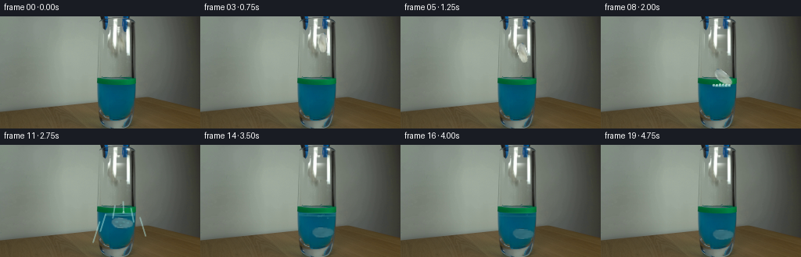
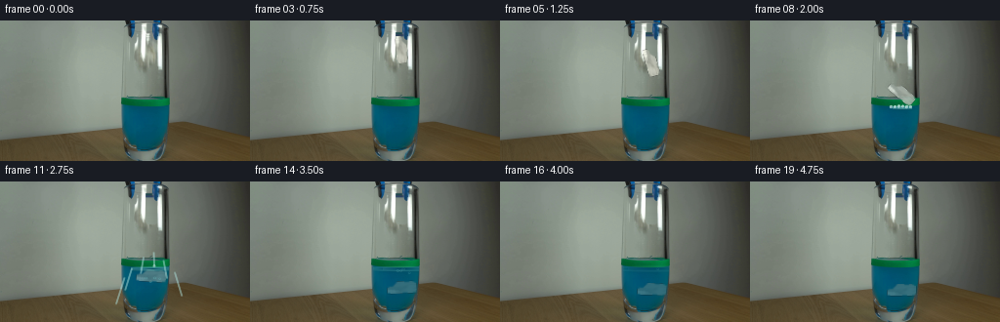
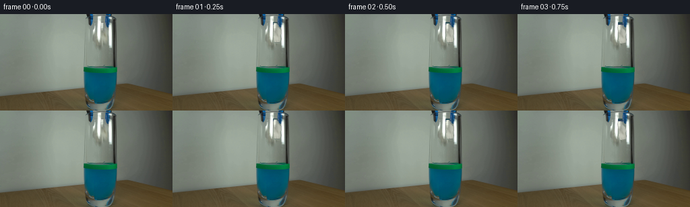

CODING AGENTS AS PIXEL WORLD MODELS
traex/DeepSeek-V4.1-Flash · 0136
点击播放 · 原生 RGB 像素
逐轮保存的候选
回放视频、检查图与代码变化。
每份候选均可单独播放。实际图片检查记录在下方工具轨迹中。
候选 01播放与检查图
点击播放 · 原生 RGB 像素

展开代码变化
--- 上一保存版本
+++ 本次保存版本
@@ -0,0 +1,404 @@
+from pathlib import Path
+
+import cv2
+import numpy as np
+from PIL import Image
+
+import artifact_io
+
+
+ROOT = Path(__file__).resolve().parent
+WIDTH, HEIGHT = 256, 144
+FRAME_COUNT = 20
+FPS = 4
+
+
+def _smoothstep(value):
+ value = np.clip(value, 0.0, 1.0)
+ return value * value * (3.0 - 2.0 * value)
+
+
+def _soft_circle(canvas, cx, cy, radius, color, alpha):
+ x0 = max(0, int(np.floor(cx - radius - 2)))
+ x1 = min(WIDTH, int(np.ceil(cx + radius + 2)))
+ y0 = max(0, int(np.floor(cy - radius - 2)))
+ y1 = min(HEIGHT, int(np.ceil(cy + radius + 2)))
+ if x0 >= x1 or y0 >= y1:
+ return
+
+ yy, xx = np.mgrid[y0:y1, x0:x1]
+ distance = np.sqrt((xx - cx) ** 2 + (yy - cy) ** 2)
+ weight = _smoothstep(radius + 1.0 - distance)
+ weight *= alpha
+ if weight.max() <= 0:
+ return
+
+ region = canvas[y0:y1, x0:x1]
+ region[:] = region * (1.0 - weight[..., None]) + np.asarray(color) * weight[..., None]
+
+
+def _soft_line(canvas, x0, y0, x1, y1, radius, color, alpha):
+ length = max(abs(x1 - x0), abs(y1 - y0), 1)
+ steps = int(length * 2) + 1
+ for index in range(steps + 1):
+ t = index / steps
+ _soft_circle(
+ canvas,
+ x0 + (x1 - x0) * t,
+ y0 + (y1 - y0) * t,
+ radius,
+ color,
+ alpha,
+ )
+
+
+def _ellipse_ring(canvas, cx, cy, rx, ry, thickness, color, alpha):
+ x0 = max(0, int(np.floor(cx - rx - 2)))
+ x1 = min(WIDTH, int(np.ceil(cx + rx + 2)))
+ y0 = max(0, int(np.floor(cy - ry - 2)))
+ y1 = min(HEIGHT, int(np.ceil(cy + ry + 2)))
+ if x0 >= x1 or y0 >= y1 or rx <= 0.1 or ry <= 0.1:
+ return
+
+ yy, xx = np.mgrid[y0:y1, x0:x1]
+ radius = np.sqrt(((xx - cx) / rx) ** 2 + ((yy - cy) / ry) ** 2)
+ distance = np.abs(radius - 1.0) * min(rx, ry)
+ weight = _smoothstep(thickness - distance) * alpha
+ weight *= ((xx >= 126) & (xx <= 172) & (yy >= 78) & (yy <= 112))
+ if weight.max() <= 0:
+ return
+
+ region = canvas[y0:y1, x0:x1]
+ region[:] = region * (1.0 - weight[..., None]) + np.asarray(color) * weight[..., None]
+
+
+def _ellipse_shadow(canvas, cx, cy, rx, ry, color, alpha):
+ x0 = max(0, int(np.floor(cx - rx - 2)))
+ x1 = min(WIDTH, int(np.ceil(cx + rx + 2)))
+ y0 = max(0, int(np.floor(cy - ry - 2)))
+ y1 = min(HEIGHT, int(np.ceil(cy + ry + 2)))
+ if x0 >= x1 or y0 >= y1:
+ return
+
+ yy, xx = np.mgrid[y0:y1, x0:x1]
+ radius = np.sqrt(((xx - cx) / rx) ** 2 + ((yy - cy) / ry) ** 2)
+ weight = _smoothstep(1.0 - radius) * alpha
+ weight *= (xx >= 126) & (xx <= 172) & (yy >= 78) & (yy <= 112)
+ region = canvas[y0:y1, x0:x1]
+ region[:] = region * (1.0 - weight[..., None]) + np.asarray(color) * weight[..., None]
+
+
+def _clean_plate(frame):
+ """Remove the small paper wad while preserving the grabber and glass."""
+ source = frame.astype(np.float32)
+ filled = source.copy()
+
+ for y in range(15, 47):
+ left = np.median(source[y, 136:141], axis=0)
+ right = np.median(source[y, 171:176], axis=0)
+ for x in range(148, 164):
+ t = (x - 148) / 15.0
+ t = t * t * (3.0 - 2.0 * t)
+ filled[y, x] = left * (1.0 - t) + right * t
+
+ mask = np.zeros((HEIGHT, WIDTH), dtype=np.float32)
+ mask[16:45, 149:162] = 1.0
+ mask = cv2.GaussianBlur(mask, (0, 0), 0.65)
+ mask[16:45, 149:162] *= 0.98
+ result = source * (1.0 - mask[..., None]) + filled * mask[..., None]
+ return np.clip(result, 0, 255)
+
+
+def _paper_sprite(frame):
+ """Extract the crumpled paper and give it a light paper-like grade."""
+ x0, x1 = 149, 162
+ y0, y1 = 17, 44
+ crop = frame[y0:y1, x0:x1].astype(np.float32)
+ height, width = crop.shape[:2]
+
+ polygon = np.array(
+ [
+ [5, 1],
+ [9, 1],
+ [11, 4],
+ [12, 10],
+ [11, 17],
+ [9, 24],
+ [6, 26],
+ [3, 24],
+ [1, 18],
+ [0, 11],
+ [1, 5],
+ ],
+ dtype=np.int32,
+ )
+ mask = np.zeros((height, width), dtype=np.float32)
+ cv2.fillPoly(mask, [polygon], 1.0)
+ mask = cv2.GaussianBlur(mask, (0, 0), 0.55)
+
+ mean = crop.mean(axis=2, keepdims=True)
+ paper = crop * 0.84 + mean * 0.16
+ paper = paper * 1.12 + 9.0
+
+ # Keep the crumpled surface texture but add a faint lit edge.
+ eroded = cv2.erode(mask, np.ones((3, 3), np.float32), iterations=1)
+ edge = np.clip(mask - eroded, 0.0, 1.0)
+ paper += edge[..., None] * np.array([17.0, 18.0, 15.0], dtype=np.float32)
+ paper = np.clip(paper, 0, 255)
+ return paper, np.clip(mask, 0.0, 1.0)
+
+
+def _place_paper(canvas, sprite, mask, cx, cy, scale, angle, tint=0.0):
+ height, width = mask.shape
+ paper = sprite
+ alpha = mask
+
+ if tint > 0.0:
+ liquid = np.array([18.0, 88.0, 108.0], dtype=np.float32)
+ paper = paper * (1.0 - tint) + liquid * tint
+ paper = cv2.GaussianBlur(paper, (3, 3), 0.35)
+ alpha = cv2.GaussianBlur(alpha, (3, 3), 0.35)
+
+ matrix = cv2.getRotationMatrix2D(
+ ((width - 1) * 0.5, (height - 1) * 0.5),
+ angle,
+ scale,
+ )
+ matrix[0, 2] += cx - (width - 1) * 0.5
+ matrix[1, 2] += cy - (height - 1) * 0.5
+
+ warped_paper = cv2.warpAffine(
+ paper,
+ matrix,
+ (WIDTH, HEIGHT),
+ flags=cv2.INTER_LINEAR,
+ borderMode=cv2.BORDER_CONSTANT,
+ borderValue=0,
+ )
+ warped_alpha = cv2.warpAffine(
+ alpha,
+ matrix,
+ (WIDTH, HEIGHT),
+ flags=cv2.INTER_LINEAR,
+ borderMode=cv2.BORDER_CONSTANT,
+ borderValue=0,
+ )
+ warped_alpha = np.clip(warped_alpha, 0.0, 1.0)
+ if tint > 0.0:
+ warped_alpha *= 0.88
+
+ canvas[:] = canvas * (1.0 - warped_alpha[..., None]) + warped_paper * warped_alpha[..., None]
+
+
+def _add_surface_motion(canvas, frame_index):
+ if frame_index < 5 or frame_index > 18:
+ return
+
+ if frame_index <= 7:
+ amount = (frame_index - 4) / 4.0
+ _ellipse_shadow(
+ canvas,
+ 156.0,
+ 89.0,
+ 3.0 + 3.5 * amount,
+ 0.7 + 0.7 * amount,
+ np.array([0.0, 54.0, 64.0]),
+ 0.08 + 0.12 * amount,
+ )
+
+ if frame_index >= 8:
+ t = (frame_index - 8) / 10.0
+ fade = max(0.0, 1.0 - t)
+ _ellipse_shadow(
+ canvas,
+ 156.0,
+ 89.5,
+ 6.0 + 4.0 * t,
+ 1.1 + 0.7 * t,
+ np.array([0.0, 47.0, 58.0]),
+ 0.23 * fade,
+ )
+
+ ring_specs = [
+ (8.0 + 38.0 * t, 0.8 + 2.2 * t, 0.55 * fade),
+ (3.0 + 24.0 * t, 0.5 + 1.4 * t, 0.35 * fade),
+ ]
+ for rx, ry, alpha in ring_specs:
+ _ellipse_ring(
+ canvas,
+ 156.0,
+ 89.0,
+ rx,
+ ry,
+ 1.0 + 0.5 * fade,
+ np.array([91.0, 177.0, 176.0]),
+ alpha,
+ )
+ _ellipse_ring(
+ canvas,
+ 156.0,
+ 90.2,
+ rx * 0.96,
+ ry * 0.9,
+ 0.8,
+ np.array([0.0, 42.0, 53.0]),
+ alpha * 0.45,
+ )
+
+
+def _add_splash(canvas, frame_index):
+ if frame_index < 8 or frame_index > 11:
+ return
+
+ impact = 8
+ drops = [
+ (148.0, 88.0, -27.0, -56.0),
+ (152.0, 87.5, -11.0, -78.0),
+ (156.0, 87.5, 2.0, -88.0),
+ (160.0, 88.0, 14.0, -72.0),
+ (164.0, 88.0, 29.0, -48.0),
+ (144.0, 88.0, -34.0, -37.0),
+ ]
+ for drop_index, (x0, y0, vx, vy) in enumerate(drops):
+ previous = None
+ for step in range(0, frame_index - impact + 1):
+ t = step / FPS
+ x = x0 + vx * t
+ y = y0 + vy * t + 0.5 * 230.0 * t * t
+ if previous is not None and step == frame_index - impact:
+ _soft_line(
+ canvas,
+ previous[0],
+ previous[1],
+ x,
+ y,
+ 0.55,
+ np.array([174.0, 225.0, 221.0]),
+ 0.16,
+ )
+ previous = (x, y)
+
+ t = (frame_index - impact) / FPS
+ x = x0 + vx * t
+ y = y0 + vy * t + 0.5 * 230.0 * t * t
+ if 68 <= y <= 92 and 128 <= x <= 170:
+ alpha = 0.78 - 0.10 * (frame_index - impact) - 0.02 * drop_index
+ _soft_circle(
+ canvas,
+ x,
+ y,
+ 1.05 + 0.18 * (drop_index % 2),
+ np.array([214.0, 242.0, 235.0]),
+ max(0.25, alpha),
+ )
+ _soft_circle(
+ canvas,
+ x + 0.6,
+ y + 0.8,
+ 0.55,
+ np.array([36.0, 124.0, 136.0]),
+ max(0.12, alpha * 0.35),
+ )
+
+
+def _add_bubbles(canvas, frame_index):
+ if frame_index < 10 or frame_index > 18:
+ return
+
+ t = (frame_index - 10) / FPS
+ bubble_tracks = [
+ (153.0, 106.0, 15.0, 0.0),
+ (158.0, 111.0, 12.0, 0.8),
+ (150.0, 116.0, 10.0, 1.5),
+ (162.0, 118.0, 8.0, 2.1),
+ ]
+ for x0, y0, speed, phase in bubble_tracks:
+ local_t = t + phase
+ y = y0 - speed * local_t
+ x = x0 + 1.4 * np.sin(local_t * 2.2 + phase)
+ if y < 88.5:
+ continue
+ alpha = 0.42 * max(0.0, 1.0 - (frame_index - 10) / 9.0)
+ _ellipse_ring(
+ canvas,
+ x,
+ y,
+ 1.0 + 0.22 * (int(phase * 2) % 2),
+ 0.8 + 0.15 * (int(phase * 2) % 2),
+ 0.8,
+ np.array([100.0, 183.0, 185.0]),
+ alpha,
+ )
+
+
+def _render_paper_frame(base, sprite, mask, pose):
+ cx, cy, scale, angle, tint = pose
+ canvas = base.copy()
+ _place_paper(canvas, sprite, mask, cx, cy, scale, angle, tint=tint)
+ return np.clip(canvas, 0, 255)
+
+
+def build_frames():
+ first = np.asarray(Image.open(ROOT / "first_frame.png").convert("RGB"), dtype=np.uint8)
+ base = _clean_plate(first)
+ sprite, mask = _paper_sprite(first)
+
+ poses = {
+ 0: (156.0, 31.0, 1.0, 0.0, 0.0),
+ 1: (156.0, 31.2, 1.0, 0.0, 0.0),
+ 2: (156.2, 31.8, 0.99, 1.5, 0.0),
+ 3: (155.9, 33.2, 0.98, 4.0, 0.0),
+ 4: (156.4, 38.0, 0.98, 8.0, 0.0),
+ 5: (155.6, 46.5, 0.99, 16.0, 0.0),
+ 6: (156.7, 57.0, 1.00, 25.0, 0.0),
+ 7: (155.2, 68.0, 1.01, 38.0, 0.0),
+ 8: (156.3, 78.0, 1.03, 50.0, 0.10),
+ 9: (156.0, 87.0, 1.05, 64.0, 0.30),
+ 10: (156.4, 94.0, 1.06, 76.0, 0.45),
+ 11: (155.8, 100.0, 1.07, 86.0, 0.58),
+ 12: (156.2, 105.0, 1.07, 91.0, 0.66),
+ 13: (155.9, 109.0, 1.06, 93.0, 0.72),
+ 14: (156.3, 112.0, 1.05, 92.0, 0.76),
+ 15: (156.0, 113.4, 1.04, 90.0, 0.78),
+ 16: (156.4, 113.8, 1.04, 88.0, 0.78),
+ 17: (156.1, 114.2, 1.04, 90.0, 0.77),
+ 18: (156.2, 114.5, 1.03, 91.0, 0.76),
+ 19: (156.0, 114.7, 1.03, 90.0, 0.75),
+ }
+
+ frames = np.empty((FRAME_COUNT, HEIGHT, WIDTH, 3), dtype=np.uint8)
+ frames[0] = first
+
+ for frame_index in range(1, FRAME_COUNT):
+ canvas = _render_paper_frame(base, sprite, mask, poses[frame_index])
+ _add_surface_motion(canvas, frame_index)
+ _add_bubbles(canvas, frame_index)
+ _add_splash(canvas, frame_index)
+ frames[frame_index] = np.clip(canvas + 0.5, 0, 255).astype(np.uint8)
+
+ frames[0] = first
+ return frames
+
+
+def main():
+ frames = build_frames()
+ assert frames.shape == (FRAME_COUNT, HEIGHT, WIDTH, 3)
+ assert frames.dtype == np.uint8
+ artifact_io.save(frames, ROOT)
+
+ try:
+ import imageio.v2 as imageio
+
+ imageio.mimsave(
+ ROOT / "preview.mp4",
+ list(frames),
+ fps=FPS,
+ macro_block_size=1,
+ quality=9,
+ )
+ except Exception:
+ pass
+
+
+if __name__ == "__main__":
+ main()
候选 02播放与检查图
点击播放 · 原生 RGB 像素


展开代码变化
--- 上一保存版本
+++ 本次保存版本
@@ -93,42 +93,60 @@
source = frame.astype(np.float32)
filled = source.copy()
- for y in range(15, 47):
- left = np.median(source[y, 136:141], axis=0)
- right = np.median(source[y, 171:176], axis=0)
- for x in range(148, 164):
- t = (x - 148) / 15.0
+ for y in range(12, 45):
+ background = np.median(source[y, 131:137], axis=0)
+ for x in range(149, 161):
+ t = (x - 149) / 11.0
t = t * t * (3.0 - 2.0 * t)
- filled[y, x] = left * (1.0 - t) + right * t
+ shade = 1.02 - 0.08 * t
+ filled[y, x] = background * shade
mask = np.zeros((HEIGHT, WIDTH), dtype=np.float32)
- mask[16:45, 149:162] = 1.0
- mask = cv2.GaussianBlur(mask, (0, 0), 0.65)
- mask[16:45, 149:162] *= 0.98
+ polygon = np.array(
+ [
+ [149, 12],
+ [155, 12],
+ [156, 15],
+ [156, 19],
+ [161, 20],
+ [161, 41],
+ [159, 43],
+ [150, 43],
+ [149, 39],
+ ],
+ dtype=np.int32,
+ )
+ cv2.fillPoly(mask, [polygon], 1.0)
+ mask = cv2.GaussianBlur(mask, (0, 0), 0.55)
result = source * (1.0 - mask[..., None]) + filled * mask[..., None]
return np.clip(result, 0, 255)
def _paper_sprite(frame):
"""Extract the crumpled paper and give it a light paper-like grade."""
- x0, x1 = 149, 162
- y0, y1 = 17, 44
+ x0, x1 = 149, 161
+ y0, y1 = 13, 42
crop = frame[y0:y1, x0:x1].astype(np.float32)
height, width = crop.shape[:2]
polygon = np.array(
[
- [5, 1],
- [9, 1],
- [11, 4],
- [12, 10],
- [11, 17],
- [9, 24],
- [6, 26],
- [3, 24],
- [1, 18],
- [0, 11],
- [1, 5],
+ [1, 0],
+ [5, 0],
+ [6, 2],
+ [6, 5],
+ [8, 7],
+ [11, 10],
+ [11, 15],
+ [10, 19],
+ [11, 24],
+ [9, 28],
+ [5, 29],
+ [1, 27],
+ [0, 22],
+ [1, 17],
+ [0, 12],
+ [0, 6],
],
dtype=np.int32,
)
@@ -137,13 +155,16 @@
mask = cv2.GaussianBlur(mask, (0, 0), 0.55)
mean = crop.mean(axis=2, keepdims=True)
- paper = crop * 0.84 + mean * 0.16
- paper = paper * 1.12 + 9.0
+ relief = np.clip((mean - 108.0) / 112.0, 0.0, 1.0) ** 0.82
+ shadow = np.array([132.0, 134.0, 126.0], dtype=np.float32)
+ highlight = np.array([238.0, 239.0, 228.0], dtype=np.float32)
+ paper = shadow + relief * (highlight - shadow)
+ paper += (crop - mean) * 0.22
# Keep the crumpled surface texture but add a faint lit edge.
eroded = cv2.erode(mask, np.ones((3, 3), np.float32), iterations=1)
edge = np.clip(mask - eroded, 0.0, 1.0)
- paper += edge[..., None] * np.array([17.0, 18.0, 15.0], dtype=np.float32)
+ paper += edge[..., None] * np.array([14.0, 15.0, 12.0], dtype=np.float32)
paper = np.clip(paper, 0, 255)
return paper, np.clip(mask, 0.0, 1.0)
@@ -344,26 +365,26 @@
sprite, mask = _paper_sprite(first)
poses = {
- 0: (156.0, 31.0, 1.0, 0.0, 0.0),
- 1: (156.0, 31.2, 1.0, 0.0, 0.0),
- 2: (156.2, 31.8, 0.99, 1.5, 0.0),
- 3: (155.9, 33.2, 0.98, 4.0, 0.0),
- 4: (156.4, 38.0, 0.98, 8.0, 0.0),
- 5: (155.6, 46.5, 0.99, 16.0, 0.0),
- 6: (156.7, 57.0, 1.00, 25.0, 0.0),
- 7: (155.2, 68.0, 1.01, 38.0, 0.0),
- 8: (156.3, 78.0, 1.03, 50.0, 0.10),
- 9: (156.0, 87.0, 1.05, 64.0, 0.30),
- 10: (156.4, 94.0, 1.06, 76.0, 0.45),
- 11: (155.8, 100.0, 1.07, 86.0, 0.58),
- 12: (156.2, 105.0, 1.07, 91.0, 0.66),
- 13: (155.9, 109.0, 1.06, 93.0, 0.72),
- 14: (156.3, 112.0, 1.05, 92.0, 0.76),
- 15: (156.0, 113.4, 1.04, 90.0, 0.78),
- 16: (156.4, 113.8, 1.04, 88.0, 0.78),
- 17: (156.1, 114.2, 1.04, 90.0, 0.77),
- 18: (156.2, 114.5, 1.03, 91.0, 0.76),
- 19: (156.0, 114.7, 1.03, 90.0, 0.75),
+ 0: (154.8, 27.0, 1.0, 0.0, 0.0),
+ 1: (154.8, 27.2, 1.0, 0.0, 0.0),
+ 2: (155.0, 27.8, 0.99, 1.5, 0.0),
+ 3: (154.7, 29.2, 0.98, 4.0, 0.0),
+ 4: (155.2, 34.0, 0.98, 8.0, 0.0),
+ 5: (154.4, 42.5, 0.99, 16.0, 0.0),
+ 6: (155.5, 53.0, 1.00, 25.0, 0.0),
+ 7: (154.0, 64.0, 1.01, 38.0, 0.0),
+ 8: (155.1, 74.0, 1.03, 50.0, 0.10),
+ 9: (154.8, 83.0, 1.05, 64.0, 0.30),
+ 10: (155.2, 90.0, 1.06, 76.0, 0.45),
+ 11: (154.6, 96.0, 1.07, 86.0, 0.58),
+ 12: (155.0, 101.0, 1.07, 91.0, 0.66),
+ 13: (154.7, 105.0, 1.06, 93.0, 0.72),
+ 14: (155.1, 108.0, 1.05, 92.0, 0.76),
+ 15: (154.8, 109.4, 1.04, 90.0, 0.78),
+ 16: (155.2, 109.8, 1.04, 88.0, 0.78),
+ 17: (154.9, 110.2, 1.04, 90.0, 0.77),
+ 18: (155.0, 110.5, 1.03, 91.0, 0.76),
+ 19: (154.8, 110.7, 1.03, 90.0, 0.75),
}
frames = np.empty((FRAME_COUNT, HEIGHT, WIDTH, 3), dtype=np.uint8)
可观测工具轨迹
实际执行的命令与返回图片。
命令 1exit 0
/bin/bash -c "pwd && rg --files -g '"'!*.mp4'"' -g '"'!*.webm'"' -g '"'!*.mov'"' | sort"
命令 2exit 0
/bin/bash -c "sed -n '1,240p' GENERATION_RULES.md"
命令 3exit 0
/bin/bash -c "sed -n '1,240p' prompt.txt"
命令 4exit 0
/bin/bash -c 'file first_frame.png && identify first_frame.png 2>/dev/null || true && ls -lah'
命令 5exit 0
/bin/bash -c "sed -n '1,260p' artifact_io.py"
命令 6exit 0
/bin/bash -c "sed -n '1,260p' player_template.html"
命令 7exit 0
/bin/bash -c "python - <<'PY'
from PIL import Image
im=Image.open('first_frame.png')
print(im.mode, im.size)
a=im.convert('RGB')
print('corners', [a.getpixel(p) for p in [(0,0),(255,0),(0,143),(255,143),(128,72)]])
# coarse 16x9 color grid hex
for y in range(9):
print(' '.join('%02x%02x%02x'%a.getpixel((min(255,int((x+.5)*256/16)), min(143,int((y+.5)*144/9)))) for x in range(16)))
PY"命令 8exit 0
/bin/bash -c "python - <<'PY' mods=['numpy','PIL','scipy','cv2','sklearn','imageio','matplotlib'] for m in mods: try: x=__import__(m); print(m,'ok',getattr(x,'__version__','')) except Exception as e: print(m,'NO',e) PY"
命令 9exit 0
/bin/bash -c "python - <<'PY'
from PIL import Image
import numpy as np
im=np.asarray(Image.open('first_frame.png').convert('RGB')).astype(float)
# 128x72 average blocks, classify by HSV-ish
small=im.reshape(72,2,128,2,3).mean((1,3))
mx=small.max(2); mn=small.min(2); d=mx-mn
# categories: black/brown/blue/green/gray/white
ch=[]
for y in range(72):
s=''
for x in range(128):
r,g,b=small[y,x]
if b>g*1.08 and b>r*1.15: c='B'
elif g>r*1.07 and g>b*1.03: c='G'
elif r>g*1.18 and g>b*1.1: c='O'
elif mx[y,x]<35: c='#'
elif mx[y,x]<65: c='d'
elif mx[y,x]<105: c='.'
elif mx[y,x]<145: c='-'
elif mx[y,x]<190: c='+'
else: c=' '
s+=c
ch.append(s)
print('\\n'.join(ch))
PY"命令 10exit 0
/bin/bash -c "python - <<'PY'
from PIL import Image
import numpy as np
from sklearn.cluster import KMeans
im=np.asarray(Image.open('first_frame.png').convert('RGB'))
p=im.reshape(-1,3)
# exact common colors
u,c=np.unique(p,axis=0,return_counts=True)
for i in np.argsort(c)[-30:][::-1]: print(c[i], tuple(u[i]))
print('KMEANS')
km=KMeans(n_clusters=16,random_state=0,n_init=4).fit(p[::3])
for cen,cnt in sorted(zip(km.cluster_centers_,np.bincount(km.labels_)),key=lambda x:-x[1]):
print(cnt, tuple(np.rint(cen).astype(int)))
PY"命令 11exit 0
/bin/bash -c "python - <<'PY'
from PIL import Image
import numpy as np
im=np.asarray(Image.open('first_frame.png').convert('RGB'))
# BGR-like masks
r,g,b=im.transpose(2,0,1).astype(int)
masks={
'blue':(b>g+12)&(b>r+25),
'green':(g>r+18)&(g>b+3),
'brown':(r>g+10)&(g>b+15)&(r<160),
'dark':(r+g+b<130),
'white':(r+g+b>600),
}
for k,m in masks.items():
ys,xs=np.where(m)
print(k, len(xs), 'bbox', (xs.min(),ys.min(),xs.max(),ys.max()) if len(xs) else None)
# per-row ranges for blue green brown
for k in ['blue','green','brown','dark']:
print('\\n',k)
m=masks[k]
for y in range(0,144,4):
xs=np.where(m[y:y+4].any(0))[0]
if len(xs):
# segments
seg=[]; a=xs[0]; p=xs[0]
for x in xs[1:]:
if x>p+1: seg.append((a,p));a=x
p=x
seg.append((a,p))
print(y,seg)
PY"命令 12exit 0
/bin/bash -c "python - <<'PY'
from PIL import Image
import numpy as np
im=np.asarray(Image.open('first_frame.png').convert('RGB'))
# print run length per row based on quantized classifications
for y in [0,4,8,12,16,24,32,40,48,56,64,72,76,80,84,88,92,96,100,104,108,112,116,120,124,128,132,136,140,143]:
row=im[y]
# quantize each pixel to 16-color kmeans-ish predefined palette nearest
pal=np.array([[4,83,107],[0,104,68],[83,69,42],[153,165,152],[120,130,118],[60,62,55],[245,248,245],[200,210,201],[160,120,75],[30,30,30]])
d=((row[:,None,:].astype(int)-pal[None])**2).sum(2)
q=d.argmin(1)
chars='BGbwWdkK#O'[:len(pal)]
# segments
out=[]; a=0;p=q[0]
for x in range(1,256):
if q[x]"'!=p:
if x-a>=2: out.append(f'"'{a}-{x-1}{chars[p]}')
a=x;p=q[x]
if 256-a>=2:out.append(f'{a}-255{chars[p]}')
print(y,' '.join(out))
PY"命令 13exit 0
/bin/bash -c "python - <<'PY'
from PIL import Image
im=Image.open('first_frame.png').convert('RGB')
im.resize((1024,576),Image.Resampling.NEAREST).save('.tmp/first_big.png')
# crops
for name,box in {'glass':(110,0,190,144),'rim':(115,60,180,110),'tool':(118,0,178,90),'bottom':(110,90,180,144)}.items():
im.crop(box).resize(((box[2]-box[0])*8,(box[3]-box[1])*8),Image.Resampling.NEAREST).save('.tmp/'+name+'.png')
PY"命令 14exit 0
/bin/bash -c "python - <<'PY'
from PIL import Image
import numpy as np
im=np.asarray(Image.open('first_frame.png').convert('RGB'))
# print ascii for central area x115:180, y0:144 downsampled 1x2 with custom key
chars=' .:-=+*#%@'
for y in range(0,144,2):
s=''
for x in range(112,184):
r,g,b=im[y,x].astype(int)
if b>g+12 and b>r+20: c='B'
elif g>r+15 and g>b+3: c='G'
elif r>g+8 and g>b+12: c='o'
elif r+g+b<150: c='D'
elif r+g+b>520: c='W'
else:
v=(r+g+b)/3
c=chars[min(9,int(v/256*10))]
s+=c
print(f'{y:03d} '+s)
PY"命令 15exit 0
/bin/bash -c "python - <<'PY'
from PIL import Image
import numpy as np
im=np.asarray(Image.open('first_frame.png').convert('RGB')).astype(float)
# rows x110-180 pixel rgb on key lines
for y in [0,4,8,12,16,24,32,40,48,56,64,72,76,78,80,82,84,86,88,92,96,100,104,108,112,116,120,124,128,132,136,140]:
print('\\ny',y)
for x in range(112,184,4):
r,g,b=im[y,x].astype(int); print(f'{x}:{r:02x}{g:02x}{b:02x}',end=' ')
print()
PY"命令 16exit 0
/bin/bash -c "python - <<'PY'
from PIL import Image
import numpy as np
im=np.asarray(Image.open('first_frame.png').convert('RGB'))
r,g,b=im.transpose(2,0,1).astype(int)
for name,m in [
('white',(r>175)&(g>180)&(b>175)),
('blue',(b>g+12)&(b>r+25)),
('green',(g>r+18)&(g>b+3)),
('darkblue',(b>g+15)&(r<80)),
('metal',(abs(r-g)<18)&(abs(g-b)<18)&(r<120)),
]:
print('\\n',name)
for y in range(0,144):
xs=np.where(m[y])[0]
xs=xs[(xs>=120)&(xs<180)]
if len(xs):
seg=[];a=p=xs[0]
for x in xs[1:]:
if x>p+1: seg.append((a,p));a=x
p=x
seg.append((a,p))
print(f'{y:3d}',seg)
PY"命令 17exit 0
/bin/bash -c "python - <<'PY'
import cv2, numpy as np
from PIL import Image
im=np.asarray(Image.open('first_frame.png').convert('RGB'))
g=cv2.cvtColor(im,cv2.COLOR_RGB2GRAY)
# various thresholds central region
for th in [130,150,170,185,200,220]:
m=((g>th)&(im[:,:,0]>th-25)&(im[:,:,1]>th-25)&(im[:,:,2]>th-25)).astype(np.uint8)
n,l,st,cent=cv2.connectedComponentsWithStats(m,8)
comps=[]
for i in range(1,n):
x,y,w,h,a=st[i];
if a>=4: comps.append((a,(x,y,w,h),tuple(np.round(cent[i],1))))
comps=sorted(comps,reverse=True)[:20]
print('\\nth',th)
print(comps)
PY"命令 18exit 0
/bin/bash -c "python - <<'PY'
import cv2,numpy as np
from PIL import Image
im=np.asarray(Image.open('first_frame.png').convert('RGB'))
# print exact central crop rows as colors mapped
for y in range(0,80,2):
print(f'{y:02d}', ''.join(
'W' if im[y,x].min()>180 else
'w' if im[y,x].min()>120 else
'B' if int(im[y,x,2])>int(im[y,x,1])+15 else
'g' if int(im[y,x,1])>int(im[y,x,0])+12 else
'o' if int(im[y,x,0])>int(im[y,x,1])+8 else
'k' if im[y,x].max()<60 else
'm' if im[y,x].max()<100 else
'.' for x in range(124,176)))
PY"命令 19exit 0
/bin/bash -c "python - <<'PY'
from PIL import Image
import numpy as np
im=np.asarray(Image.open('first_frame.png').convert('RGB'))
for y in range(0,30):
print(f'{y:02d}', ''.join('#' if im[y,x].max()<90 else 'D' if im[y,x].max()<125 else 'm' if im[y,x].max()<165 else 'w' if im[y,x].min()>210 else '+' if im[y,x].min()>160 else '-' for x in range(125,170)))
PY"命令 20exit 0
/bin/bash -c "python - <<'PY'
from PIL import Image
im=Image.open('first_frame.png').convert('RGB')
# make labeled grid overlay every 8 px for visual reasoning by reading? save candidate
from PIL import ImageDraw,ImageFont
big=im.resize((1024,576),Image.Resampling.NEAREST)
d=ImageDraw.Draw(big)
for x in range(0,256,8):
d.line((x*4,0,x*4,576),fill=(255,0,0),width=1)
d.text((x*4+1,1),str(x),fill=(255,0,0))
for y in range(0,144,8):
d.line((0,y*4,1024,y*4),fill=(0,255,255),width=1)
d.text((1,y*4+1),str(y),fill=(0,255,255))
big.save('.tmp/grid.png')
PY"命令 21exit 0
/bin/bash -c "python - <<'PY'
from PIL import Image
import numpy as np
im=np.asarray(Image.open('first_frame.png').convert('RGB')).astype(np.int16)
# high contrast Sobel central area
import cv2
g=cv2.cvtColor(im.astype(np.uint8),cv2.COLOR_RGB2GRAY)
e=cv2.Canny(g,20,60)
# ascii edge
for y in range(0,110,2):
print(f'{y:03d} '+''.join('#' if e[y:y+2,x].any() else ' ' for x in range(110,190)))
PY"命令 22exit 0
/bin/bash -c "python - <<'PY'
from PIL import Image
import numpy as np
im=np.asarray(Image.open('first_frame.png').convert('RGB'))
# pixel runs that are strong white per row x130-170, every row
for y in range(0,70):
xs=np.where(im[y,:,0]>220)[0]
xs=xs[(xs>=130)&(xs<=170)]
if len(xs):
print(y, xs.tolist())
PY"命令 23exit 0
/bin/bash -c "python - <<'PY'
from PIL import Image
import numpy as np
im=np.asarray(Image.open('first_frame.png').convert('RGB'))
# print exact rgb at selected x y central
for y in [15,20,25,30,35,40,45,50,55,60,65,70,75,80,85]:
print('y',y)
for x in [130,135,138,140,142,144,146,148,150,152,154,156,158,160,162,164,166,168,170]:
print(x,tuple(im[y,x]),end='; ')
print()
PY"命令 24exit 0
/bin/bash -c "python - <<'PY'
import cv2,numpy as np
from PIL import Image
im=np.asarray(Image.open('first_frame.png').convert('RGB')).astype(np.float32)
for sig in [3,6,10]:
bg=cv2.GaussianBlur(im,(0,0),sig)
d=np.linalg.norm(im-bg,axis=2)
for th in [10,15,20,25,30]:
m=(d>th).astype(np.uint8)
m[:0]=0
n,l,st,c=cv2.connectedComponentsWithStats(m,8)
comps=[]
for i in range(1,n):
x,y,w,h,a=st[i]
if a>10 and x<200 and y<100: comps.append((a,(x,y,w,h)))
comps=sorted(comps,reverse=True)[:15]
print('sig',sig,'th',th,comps)
PY"命令 25exit 0
/bin/bash -c "python - <<'PY'
from PIL import Image
import numpy as np
im=np.asarray(Image.open('first_frame.png').convert('RGB'))
# print exact rows around 35-50 x140:170 for inspect; also rows 0-20 x140-170
for y in range(33,51):
print('y',y)
print('x '+' '.join(f'{x:3d}' for x in range(140,171)))
print('R '+' '.join(f'{im[y,x,0]:3d}' for x in range(140,171)))
print('G '+' '.join(f'{im[y,x,1]:3d}' for x in range(140,171)))
print('B '+' '.join(f'{im[y,x,2]:3d}' for x in range(140,171)))
PY"命令 26exit 0
/bin/bash -c "python - <<'PY'
from PIL import Image
import numpy as np
im=np.asarray(Image.open('first_frame.png').convert('RGB'))
# per row x125-175 max/min and mean for y35-60
for y in range(35,61):
a=im[y,125:176].astype(int)
print(y, 'min',a.min(0),'max',a.max(0),'mean',np.rint(a.mean(0)).astype(int))
PY"命令 27exit 0
/bin/bash -c "python - <<'PY'
from PIL import Image
import numpy as np
im=np.asarray(Image.open('first_frame.png').convert('RGB'))
# rows around white tool: print coords of bright mask per row x130-170 all
m=(im[:,:,0]>180)&(im[:,:,1]>180)&(im[:,:,2]>180)
for y in range(0,60):
xs=np.where(m[y,125:176])[0]+125
if len(xs): print(y, f'{xs.min()}-{xs.max()}',len(xs), xs.tolist())
PY"命令 28exit 0
/bin/bash -c "python - <<'PY'
from PIL import Image
import numpy as np
im=np.asarray(Image.open('first_frame.png').convert('RGB'))
# print crop visually with 2x2 mean at y0-60 x120-180 as digits based color distance to prototypes
proto=np.array([[255,255,255],[140,152,140],[75,77,70],[45,47,42],[20,65,105],[0,90,50],[100,110,100]])
chars='WBmMDgb'
for y in range(0,61,1):
s=''
for x in range(118,182):
c=im[y,x].astype(int)
d=((proto-c)**2).sum(1);i=d.argmin()
s+=chars[i]
print(f'{y:02d} {s}')
PY"命令 29exit 0
/bin/bash -c "python - <<'PY'
import cv2, numpy as np
from PIL import Image
im=np.asarray(Image.open('first_frame.png').convert('RGB'))
# central highpass: examine difference from horizontal blur? save feature maps magnified
for kind in ['canny','laplacian','sat','bright']:
if kind=='canny': x=cv2.Canny(cv2.cvtColor(im,cv2.COLOR_RGB2GRAY),15,50)
elif kind=='laplacian': x=np.abs(cv2.Laplacian(cv2.cvtColor(im,cv2.COLOR_RGB2GRAY),cv2.CV_32F)); x=np.clip(x*3,0,255).astype(np.uint8)
elif kind=='sat': x=cv2.cvtColor(im,cv2.COLOR_RGB2HSV)[:,:,1]
else: x=im.mean(2).astype(np.uint8)
crop=x[0:80,115:185]
Image.fromarray(crop).resize((560,640),Image.Resampling.NEAREST).save('.tmp/feature_'+kind+'.png')
PY"命令 30exit 0
/bin/bash -c "python - <<'PY'
from PIL import Image
import numpy as np
im=np.asarray(Image.open('first_frame.png').convert('RGB'))
# exact row segments at y40-50 where r>200 or all >200
for y in range(0,80):
xs=np.where((im[y,:,0]>200)&(im[y,:,1]>200)&(im[y,:,2]>200))[0]
xs=xs[(xs>=120)&(xs<180)]
if len(xs):
print(y,xs.min(),xs.max(),len(xs))
PY"命令 31exit 0
/bin/bash -c "python - <<'PY'
from PIL import Image
import numpy as np
im=np.asarray(Image.open('first_frame.png').convert('RGB'))
# per pixel descriptors around x140-170 y0-60; use bright mask and manually view values matrix
# print ascii of intensity normalized per row?
for y in range(0,60):
a=im[y,140:170].mean(1)
# levels
print(f'{y:02d} '+''.join(' .:-=+*#%@'[min(9,int(v/256*10))] for v in a))
PY"命令 32exit 0
/bin/bash -c "python - <<'PY'
from PIL import Image
import numpy as np
im=np.asarray(Image.open('first_frame.png').convert('RGB'))
# detect dark blue lines x130-140, y0:50
for y in range(0,55):
xs=np.where((im[y,:,2]>im[y,:,1]+15)&(im[y,:,0]<60))[0]
xs=xs[(xs>=120)&(xs<180)]
if len(xs): print(y, xs.tolist())
PY"命令 33exit 0
/bin/bash -c "python - <<'PY'
from PIL import Image
import numpy as np
im=np.asarray(Image.open('first_frame.png').convert('RGB'))
# Print semantic segmentation for whole frame coarser with color blocks maybe paper is white object at x145 etc
# Focus exact pixel rows with all RGB if r high; count bright connected components globally excluding background large comp
import cv2
m=((im[:,:,0]>170)&(im[:,:,1]>170)&(im[:,:,2]>170)).astype(np.uint8)
n,l,st,c=cv2.connectedComponentsWithStats(m,8)
for i in range(1,n):
x,y,w,h,a=st[i]
if a>=3: print(a,(x,y,w,h),tuple(np.round(c[i],1)))
PY"命令 34exit 0
/bin/bash -c "python - <<'PY'
from PIL import Image
import numpy as np
im=np.asarray(Image.open('first_frame.png').convert('RGB'))
# region x145-152, y0-45 print RGB mean per row and compare to nearby background
for y in range(0,45):
a=im[y,145:153].astype(float)
print(y, np.rint(a.mean(0)).astype(int), 'std',np.rint(a.std(0)).astype(int), 'center',im[y,147].tolist())
PY"命令 35exit 0
/bin/bash -c "python - <<'PY'
from PIL import Image
import numpy as np
im=np.asarray(Image.open('first_frame.png').convert('RGB'))
# compare x 137-152 y 0-70 with a horizontal shift column background to see object silhouettes; print diffs from median of x130-140 and x155-165
base=np.median(np.concatenate([im[:,125:134],im[:,168:175]],axis=1),axis=1)
# likely tool in center. Print sum abs difference each row for x130-175
for y in range(0,100):
d=np.abs(im[y,125:176].astype(float)-base[y]).mean(1)
print(f'{y:02d} '+''.join('#' if v>35 else 'O' if v>22 else 'o' if v>12 else '+' if v>6 else '.' for v in d))
PY"命令 36exit 0
/bin/bash -c "python - <<'PY'
from PIL import Image
import numpy as np
im=np.asarray(Image.open('first_frame.png').convert('RGB'))
# bright values exact in x145-152 y 0-45 matrix char
for y in range(0,45):
print(f'{y:02d}', ''.join(' ' if im[y,x].mean()>220 else '+' if im[y,x].mean()>180 else '-' if im[y,x].mean()>150 else '.' if im[y,x].mean()>120 else '#' for x in range(130,170)))
PY"命令 37exit 1
/bin/bash -c "python - <<'PY'
from PIL import Image
import numpy as np
im=np.asarray(Image.open('first_frame.png').convert('RGB'))
# crop exact x145:153 y 3:40 as luminance character with local contrast scaling
for y in range(0,45):
print(f'{y:02d}', ''.join(' #'[im[y,x].mean()>128] for x in range(140,170)))
PY"命令 38exit 0
/bin/bash -c "python - <<'PY'
from PIL import Image
import numpy as np
im=np.asarray(Image.open('first_frame.png').convert('RGB'))
for y in range(0,45):
print(f'{y:02d}', ''.join('#' if im[y,x].mean()>128 else ' ' for x in range(140,170)))
PY"命令 39exit 0
/bin/bash -c "python - <<'PY'
from PIL import Image
import numpy as np
im=np.asarray(Image.open('first_frame.png').convert('RGB'))
# print values at center of likely paper y14-24, x146-165
for y in [10,14,18,22,26,30,34,38]:
print('y',y)
for x in range(144,167):
print(f'{x}:{im[y,x,0]:02x}{im[y,x,1]:02x}{im[y,x,2]:02x}',end=' ')
print()
PY"命令 40exit 0
/bin/bash -c "python - <<'PY'
from PIL import Image
import numpy as np
im=np.asarray(Image.open('first_frame.png').convert('RGB'))
# print masks for paper color (high white/offwhite), object x145-165 y5-40; output RGB at each coordinate maybe grid
for y in range(4,42):
print(f'{y:02d}', ''.join('W' if im[y,x].min()>230 else 'w' if im[y,x].min()>190 else '+' if im[y,x].min()>150 else 'o' if im[y,x].min()>120 else '.' for x in range(142,168)))
PY"命令 41exit 0
/bin/bash -c "python - <<'PY'
from PIL import Image
import numpy as np
im=np.asarray(Image.open('first_frame.png').convert('RGB'))
# global columns bright vertical bands, mean around top rows
for yr in [(0,20),(20,40),(40,60),(60,80)]:
a=im[yr[0]:yr[1]].mean((0,2))
print(yr, [(x,round(a[x],1)) for x in range(120,180,2)])
PY"命令 42exit 0
/bin/bash -c "python - <<'PY'
from PIL import Image
import numpy as np
im=np.asarray(Image.open('first_frame.png').convert('RGB'))
# inspect dark line x168 and bright x162-165 at y0-80 values
for y in range(0,81,2):
print(f'{y:02d}', '168',im[y,168].tolist(),'169',im[y,169].tolist(),'170',im[y,170].tolist(),'162',im[y,162].tolist(),'164',im[y,164].tolist(),'166',im[y,166].tolist())
PY"命令 43exit 0
/bin/bash -c "python - <<'PY'
from PIL import Image
import numpy as np
im=np.asarray(Image.open('first_frame.png').convert('RGB'))
# Check if first frame has alpha? print mode etc done. Count colors and exact texture.
print('std per channel',im.reshape(-1,3).std(0))
# center crop perhaps paper is from x146-149 y3-40 long strip and x162-165. yes.
# Create debug extraction: background + highlight tools, leave hole inpaint? use cv2.inpaint to preview masked paper/tool
import cv2
mask=np.zeros(im.shape[:2],np.uint8)
# grabber shafts at x145-149, x161-165 y3-50
mask[2:51,144:150]=255
mask[2:51,160:166]=255
# paper estimated x138-166 y13-42 plus central
mask[13:43,137:166]=255
bg=cv2.inpaint(im,mask,3,cv2.INPAINT_TELEA)
Image.fromarray(bg).resize((1024,576),Image.Resampling.NEAREST).save('.tmp/bg_inpaint.png')
PY"命令 44exit 0
/bin/bash -c "python - <<'PY'
from PIL import Image
import numpy as np
im=np.asarray(Image.open('first_frame.png').convert('RGB'))
# find dominant repeated colors in x144:166 y0:50, print most common
p=im[0:60,140:170].reshape(-1,3)
u,c=np.unique(p,axis=0,return_counts=True)
for i in np.argsort(c)[-30:][::-1]:print(c[i],tuple(u[i]))
PY"命令 45exit 0
/bin/bash -c "python - <<'PY'
from PIL import Image
import numpy as np
im=np.asarray(Image.open('first_frame.png').convert('RGB'))
# Examine bright paper likely x138-165 y13-42: all unique pixel distribution by row / local saturation
for y in range(13,43):
a=im[y,137:166].astype(int)
# count near-white
n=((a>180).all(1)).sum(); n2=((a>150).all(1)).sum()
print(y,'nearwhite',n,'light',n2,'mean',np.rint(a.mean(0)).astype(int))
PY"命令 46exit 0
/bin/bash -c "python - <<'PY'
from PIL import Image
import numpy as np
im=np.asarray(Image.open('first_frame.png').convert('RGB')).astype(float)
# estimate smooth background per row from x140-143 and x166-169, interpolate across x144..165
for y in range(10,50,2):
l=np.median(im[y,138:143],0); r=np.median(im[y,166:171],0)
bg=np.array([l+(r-l)*((x-140)/(169-140)) for x in range(144,166)])
d=np.linalg.norm(im[y,144:166]-bg,axis=1)
print(f'{y:02d}',''.join('#' if v>45 else 'O' if v>30 else 'o' if v>18 else '+' if v>9 else '.' for v in d), ' '.join(f'{v:.0f}' for v in d))
PY"命令 47exit 0
/bin/bash -c "python - <<'PY'
from PIL import Image
import numpy as np
im=np.asarray(Image.open('first_frame.png').convert('RGB'))
# center bright object region, get differences and display matrix exact means x145:166
for y in range(0,55):
print(f'{y:02d}', ''.join('#' if im[y,x,0]>235 else '+' if im[y,x,0]>190 else 'o' if im[y,x,0]>150 else '.' for x in range(140,168)))
PY"命令 48exit 0
/bin/bash -c "python - <<'PY'
from PIL import Image
import numpy as np
im=np.asarray(Image.open('first_frame.png').convert('RGB'))
# read raw exact 4x4 averages in center paper area to identify background vs paper; print sampled colors x140..166 y14..42 every 2
for y in range(14,44,2):
print('y',y)
for x in range(140,167,2): print(f'{x}:{im[y,x,0]:3d},{im[y,x,1]:3d},{im[y,x,2]:3d}',end=' | ')
print()
PY"命令 49exit 0
/bin/bash -c "python - <<'PY'
from PIL import Image
import numpy as np
im=np.asarray(Image.open('first_frame.png').convert('RGB'))
# print center paper estimated mask using saturation/values and local background; show exact candidate mask as crop image
bg=np.median(np.concatenate([im[:,120:128],im[:,178:186]],axis=1),axis=1)
d=np.abs(im.astype(float)-bg[:,None,:]).mean(2)
m=(d>18)
# restrict region
mask=np.zeros(m.shape,np.uint8);mask[3:50,135:167]=(m[3:50,135:167]*255)
Image.fromarray(mask).resize((1024,576),Image.Resampling.NEAREST).save('.tmp/mask.png')
# region mask ascii
for y in range(0,60):print(f'{y:02d} '+''.join('#' if mask[y,x] else '.' for x in range(125,180)))
PY"命令 50exit 0
/bin/bash -c "python - <<'PY'
from PIL import Image
import numpy as np
im=np.asarray(Image.open('first_frame.png').convert('RGB'))
# compute highpass background with median filter excluding central object then inspect rows values and infer glass outline.
# Print difference of central region against row-wise smoothed from left side x100-120 & right side x180-210
import cv2
bg=cv2.GaussianBlur(im,(0,0),8)
d=np.abs(im.astype(float)-bg).mean(2)
for y in range(0,144,3):
print(f'{y:03d} '+''.join('#' if v>30 else '+' if v>15 else '.' for v in d[y,100:210:2]))
PY"命令 51exit 0
/bin/bash -c "python - <<'PY'
from PIL import Image
import numpy as np
im=np.asarray(Image.open('first_frame.png').convert('RGB'))
# bright vertical strips exact colors as object extraction, evaluate connected bright mask within x140:168 y0:55
g=im.mean(2)
for th in [150,170,190,210,230]:
m=((g>th)).astype(np.uint8)
# restrict
m[:2]=0;m[55:]=0;m[:,:140]=0;m[:,168:]=0
print('\\nth',th)
for y in range(0,56):print(f'{y:02d} '+''.join('#' if m[y,x] else '.' for x in range(136,170)))
PY"命令 52exit 0
/bin/bash -c "python - <<'PY'
from PIL import Image
import numpy as np
im=np.asarray(Image.open('first_frame.png').convert('RGB'))
# zoom crop x125:175 y0:65 saved 10x with grid lines maybe view via external unavailable but file okay
Image.open('first_frame.png').crop((125,0,175,65)).resize((1000,1300),Image.Resampling.NEAREST).save('.tmp/gripper_zoom.png')
PY"命令 53exit 0
/bin/bash -c "python - <<'PY'
from PIL import Image
import numpy as np
im=np.asarray(Image.open('first_frame.png').convert('RGB'))
# row-level color profiles x130-170: print avg hue channel differences to identify object
for y in [10,15,20,25,30,35,40,45,50]:
a=im[y,130:170].astype(int)
print('\\ny',y)
print('R',' '.join(f'{v:3d}' for v in a[:,0]))
print('G',' '.join(f'{v:3d}' for v in a[:,1]))
print('B',' '.join(f'{v:3d}' for v in a[:,2]))
PY"命令 54exit 0
/bin/bash -c "python - <<'PY'
from PIL import Image
import numpy as np
im=np.asarray(Image.open('first_frame.png').convert('RGB'))
for y in [0,10,20,30,40,50,60,70,76,80,88]:
print(y, [(x,tuple(im[y,x])) for x in range(120,181,4)])
PY"命令 55exit 0
/bin/bash -c "python - <<'PY'
from PIL import Image
import numpy as np
im=np.asarray(Image.open('first_frame.png').convert('RGB'))
# colors x130-170 at y0-20: print similarity to background left/right, infer blue tubes and paper.
# Generate a high-quality 4x visual grid and maybe OCR impossible; but inspect numeric peaks.
# For every row list ranges where max>220 and also blue mask
for y in range(0,55):
a=im[y,125:176]
bright=np.where(a.min(1)>220)[0]+125
blue=np.where((a[:,2].astype(int)>a[:,1]+15)&(a[:,0]<70))[0]+125
if len(bright) or len(blue):print(y,'bright',bright.tolist(),'blue',blue.tolist())
PY"命令 56exit 0
/bin/bash -c "python - <<'PY'
from PIL import Image
import numpy as np
im=np.asarray(Image.open('first_frame.png').convert('RGB'))
# RGB values at specific regions by mean blocks, to use for tool render
for box in [(144,3,151,43),(160,14,167,51),(137,13,151,42),(151,20,166,42),(137,13,167,42)]:
x0,y0,x1,y1=box;a=im[y0:y1,x0:x1].reshape(-1,3)
print(box,'mean',np.rint(a.mean(0)).astype(int),'med',np.median(a,0).astype(int),'min',a.min(0),'max',a.max(0))
PY"命令 57exit 0
/bin/bash -c "python - <<'PY'
from PIL import Image
import numpy as np
im=np.asarray(Image.open('first_frame.png').convert('RGB'))
# print min/max and mean around paper center excluding known vertical strips x144-151, x160-166
box=im[15:42,152:160].reshape(-1,3)
print(np.rint(box.mean(0)).astype(int),np.median(box,0).astype(int),box.min(0),box.max(0))
# manually summarize per row x152:160 means
for y in range(13,43):print(y,np.rint(im[y,152:161].mean(0)).astype(int))
PY"命令 58exit 0
/bin/bash -c "python - <<'PY'
from PIL import Image
import numpy as np
im=np.asarray(Image.open('first_frame.png').convert('RGB'))
# List rows where bright object x130-150 around y15-42 exact values; detect paper edge against bg from x140-145
for y in range(10,45):
print(y,[tuple(im[y,x]) for x in range(136,146)])
PY"命令 59exit 0
/bin/bash -c "python - <<'PY'
from PIL import Image
import numpy as np
im=np.asarray(Image.open('first_frame.png').convert('RGB'))
# Try infer paper silhouette from x136-169 y10-43 by comparing brightness to same row smooth background, list ranges >160 mean
for y in range(10,44):
xs=[]
for x in range(136,170):
if im[y,x].mean()>160: xs.append(x)
if xs: print(y, xs)
PY"命令 60exit 0
/bin/bash -c "python - <<'PY'
from PIL import Image
import numpy as np
im=np.asarray(Image.open('first_frame.png').convert('RGB'))
# Save central region enlarged as normal bilinear not nearest to get gist
Image.open('first_frame.png').crop((125,0,175,65)).resize((1000,1300),Image.Resampling.BICUBIC).save('.tmp/gripper_smooth.png')
# Create side-by-side with RGB channels grayscale
for i,ch in enumerate('RGB'):
a=np.zeros_like(im);a[:,:,i]=im[:,:,i]
Image.fromarray(a).crop((125,0,175,65)).resize((500,650),Image.Resampling.BILINEAR).save('.tmp/channel_'+ch+'.png')
PY"命令 61exit 0
/bin/bash -c "python - <<'PY'
from PIL import Image
import numpy as np
im=np.asarray(Image.open('first_frame.png').convert('RGB'))
# generate 2D grayscale textual at x130-170 y0-55 with two levels around local bg but maybe easier inspect structure using contours on bright threshold
import cv2
m=((im[:,:,0]>170)&(im[:,:,1]>170)&(im[:,:,2]>170)).astype(np.uint8)*255
m[:,:120]=0;m[:,180:]=0;m[60:]=0
# print contour bounding rects
contours,_=cv2.findContours(m,cv2.RETR_EXTERNAL,cv2.CHAIN_APPROX_SIMPLE)
for c in sorted(contours,key=cv2.contourArea,reverse=True)[:10]:
print(cv2.boundingRect(c),cv2.contourArea(c))
PY"命令 62exit 0
/bin/bash -c "python - <<'PY'
from PIL import Image
import numpy as np
im=np.asarray(Image.open('first_frame.png').convert('RGB'))
# exact central object visual: use luminance quantiles per 4x4 patches x132-172 y0-56
for y in range(0,56,2):
s=''
for x in range(132,172):
v=im[y:y+2,x:x+2].mean()
s+=' .:-=+*#%@'[min(9,int(v/256*10))]
print(f'{y:02d} {s}')
PY"命令 63exit 0
/bin/bash -c "python - <<'PY'
from PIL import Image
import numpy as np
im=np.asarray(Image.open('first_frame.png').convert('RGB'))
# save crops with axes labels to inspect manually via maybe terminal sixel unavailable; use OCR no.
# Analyze blue vertical structures at top: exact hue masks and center. The blue-black grabber tool probably has two blue fingers x133-137 and 156-164 from top to y20.
# Calculate gradient edge locations per row to identify object columns.
g=im.mean(2)
for y in range(0,55):
d=np.abs(np.diff(g[y,120:180]))
peaks=np.where(d>20)[0]+120
if len(peaks): print(y,peaks.tolist())
PY"命令 64exit 0
/bin/bash -c "python - <<'PY'
from PIL import Image
import numpy as np
im=np.asarray(Image.open('first_frame.png').convert('RGB'))
# classify vertical objects by color means around each object region at x145, x163, x140
for box in [(144,3,150,40),(160,13,166,50),(137,17,142,30),(151,20,159,42),(130,0,139,20),(156,0,165,20)]:
x0,y0,x1,y1=box;a=im[y0:y1,x0:x1].reshape(-1,3)
print(box,'mean',np.rint(a.mean(0)).astype(int),'p10',np.percentile(a,10,axis=0).astype(int),'p90',np.percentile(a,90,axis=0).astype(int))
PY"命令 65exit 0
/bin/bash -c "python - <<'PY'
from PIL import Image
import numpy as np
im=np.asarray(Image.open('first_frame.png').convert('RGB'))
# maybe use cv2 template of bright paper object around x138-166 y14-42? extract by manually mask threshold brightness>165
# save the whole crop with checker to see silhouette in data: print row/column brightness matrix coarse
for y in range(0,60,2):
print(f'{y:02d} '+' '.join(f'{im[y:y+2,x:x+2].mean():3.0f}' for x in range(130,174,2)))
PY"命令 66exit 0
/bin/bash -c 'python generate.py'
命令 67exit 0
/bin/bash -c "python - <<'PY'
from PIL import Image
import numpy as np
f0=np.asarray(Image.open('first_frame.png').convert('RGB'))
f1=np.asarray(Image.open('frames/00.png').convert('RGB'))
print('frame0 exact',np.array_equal(f0,f1),'diff',np.abs(f0.astype(int)-f1.astype(int)).max())
print('files')
PY
ls -lh index.html pixels.npz inspection.png transition_check.png preview.mp4 2>/dev/null || true"命令 68exit 0
/bin/bash -c 'command -v chafa || command -v viu || command -v img2txt || command -v jp2 || true'
命令 69exit 0
/bin/bash -c "python - <<'PY'
from PIL import Image
import numpy as np
for i in range(20):
a=np.asarray(Image.open(f'frames/{i:02d}.png').convert('RGB')).astype(int)
# region diff from previous
if i:
b=np.asarray(Image.open(f'frames/{i-1:02d}.png').convert('RGB')).astype(int)
d=np.abs(a-b).max(2)
ys,xs=np.where(d>2)
print(i,'changed',len(xs),'bbox', (xs.min(),ys.min(),xs.max(),ys.max()) if len(xs) else None, 'mean',round(d.mean(),3),'max',d.max())
PY"命令 70exit 0
/bin/bash -c "python - <<'PY'
from PIL import Image
import numpy as np
# Analyze frame1 base restoration changes from source; source object likely remains in cleanplate x149:162 due to wrong assumptions
f0=np.asarray(Image.open('first_frame.png').convert('RGB')).astype(int)
f1=np.asarray(Image.open('frames/01.png').convert('RGB')).astype(int)
d=np.abs(f0-f1).max(2)
for y in range(10,55):
xs=np.where(d[y,130:180]>5)[0]+130
if len(xs):
print(y, xs.tolist())
PY"命令 71exit 0
/bin/bash -c "python - <<'PY'
from PIL import Image
import numpy as np
# print frame1 crop luminance ascii vs first; frame1 should show paper moved? pose same so should identical almost
for fi in [0,1,2,3,4,5,6,7,8,9,10,11,12]:
a=np.asarray(Image.open(f'frames/{fi:02d}.png').convert('RGB'))
print('\\nFRAME',fi)
for y in range(10,100,4):
s=''
for x in range(130,180,2):
v=a[y:y+4,x:x+2].mean()
if v>200:c='@'
elif v>170:c='%'
elif v>140:c='*'
elif v>120:c='+'
elif v>100:c='-'
elif v>80:c='.'
else:c=' '
s+=c
print(s)
PY"命令 72exit 0
/bin/bash -c "python - <<'PY'
from PIL import Image
import numpy as np
# montage of frames with motion crop and original same size; save for ourselves
frames=[Image.open(f'frames/{i:02d}.png').convert('RGB') for i in range(20)]
crop=[f.crop((118,0,194,128)).resize((304,512),Image.Resampling.NEAREST) for f in frames]
sheet=Image.new('RGB',(304*5,512*4),(20,20,20))
for i,im in enumerate(crop):sheet.paste(im,((i%5)*304,(i//5)*512))
sheet.save('.tmp/motion_sheet.png')
PY"命令 73exit 0
/bin/bash -c "python - <<'PY'
from PIL import Image
import numpy as np
# Detect sprite alpha region by comparing base? reimport module
import generate
first=np.asarray(Image.open('first_frame.png').convert('RGB'),dtype=np.uint8)
s,m=generate._paper_sprite(first)
print(s.shape,m.sum(),m.min(),m.max())
for y in range(m.shape[0]):print(f'{y+17:02d}',''.join('#' if v>.5 else '+' if v>.05 else '.' for v in m[y]))
PY"命令 74exit 0
/bin/bash -c "python - <<'PY'
from PIL import Image
import numpy as np
# compare first original with generated frame 1 around sprite; output source vs rendered pixels for y 17..44 x149..162 RGB mean
for name,path in [('src','first_frame.png'),('f1','frames/01.png')]:
a=np.asarray(Image.open(path).convert('RGB')).astype(int)
print(name)
for y in range(15,47):print(y,np.rint(a[y,149:163].mean(0)).astype(int))
PY"命令 75exit 0
/bin/bash -c "python - <<'PY'
from PIL import Image
import numpy as np
im=np.asarray(Image.open('first_frame.png').convert('RGB'))
# inspect full resolution visually through actual attached? not available. derive object bounding from bright masks, perhaps prompt object is paper at x145 etc.
# Compare object at x149-162 mean colors vs known glass interior x149-162 y50. paper likely is this off-white object (150-180) which is clearly there.
# Generate per-pixel shift to inspect motion perhaps simple.
# list frame0 crop as PPM? no.
PY"命令 76exit 0
/bin/bash -c "python - <<'PY'
from PIL import Image
import numpy as np
im=np.asarray(Image.open('first_frame.png').convert('RGB'))
# Print pixel blocks as unicode braille? higher resolution binary of local object using difference from base estimate, maybe visible enough.
# Background estimate per row by interpolating x130 and x172, then threshold luminance difference.
base=(im[:,130:131].astype(float)*(np.linspace(1,0,40)[None,:,None]) + im[:,172:173].astype(float)*np.linspace(0,1,40)[None,:,None])
reg=im[:,130:170].astype(float)
d=np.abs(reg-base).mean(2)
for y in range(0,60):
print(f'{y:02d} '+''.join('#' if d[y,x]>35 else 'O' if d[y,x]>22 else 'o' if d[y,x]>12 else '+' if d[y,x]>6 else '.' for x in range(40)))
PY"命令 77exit 0
/bin/bash -c "python - <<'PY'
from PIL import Image
import numpy as np
# Need inspect background removal quality: compose base image no sprite at frame pose hidden maybe current. Create plate preview
import generate
first=np.asarray(Image.open('first_frame.png').convert('RGB'),dtype=np.uint8)
base=generate._clean_plate(first)
Image.fromarray(np.clip(base+.5,0,255).astype(np.uint8)).resize((1024,576),Image.Resampling.NEAREST).save('.tmp/plate.png')
# diff bbox and change per row
d=np.abs(base-first.astype(float)).max(2)
print(d.max(),np.sum(d>2),np.mean(d))
for y in range(0,60):
xs=np.where(d[y]>2)[0]
if len(xs):print(y,xs.min(),xs.max(),round(d[y].max()))
PY"命令 78exit 0
/bin/bash -c "python - <<'PY'
from PIL import Image
import numpy as np
# direct visual channel of sprite mask, maybe paper extraction is wrong: inspect source crop as 2D color matrix with hue labels
im=np.asarray(Image.open('first_frame.png').convert('RGB'))
# print source crop (x148:163,y15:46) rgb at every pixel as ascii char based dominant color/val
for y in range(15,46):
s=''
for x in range(148,163):
r,g,b=im[y,x].astype(int); v=(r+g+b)/3
if b>g+15 and r<80:c='B'
elif v>225:c='@'
elif v>195:c='%'
elif v>170:c='*'
elif v>150:c='+'
elif v>130:c='-'
elif v>110:c='.'
else:c=' '
s+=c
print(f'{y:02d} {s}')
PY"命令 79exit 0
/bin/bash -c "python - <<'PY'
from PIL import Image
import numpy as np
im=np.asarray(Image.open('first_frame.png').convert('RGB'))
# derive explicit color matrix for sprite bounds based on visual mask and brightness. Save alpha-less sprite with transparent background.
# Let's compare source crop against neighboring columns shifted vertically to reconstruct; we need background clean.
# inspect x152-159 (paper center) vs x140-143 baseline means by row
for y in range(10,50):
print(y,'center',np.rint(im[y,152:160].mean(0)).astype(int),'bg',np.rint(im[y,138:143].mean(0)).astype(int))
PY"命令 80exit 0
/bin/bash -c "python - <<'PY'
from PIL import Image
import numpy as np
# check source frame region visual via direct PPM converted to colored ANSI blocks output maybe terminal supports 24bit. Print 60x30 crop with ANSI background spaces to inspect (user won't see but tool output may visually render in our own?)
im=np.asarray(Image.open('first_frame.png').convert('RGB'))
for y in range(0,60,2):
row=''
for x in range(125,175,1):
r,g,b=im[y:y+2,x].mean(0).astype(int)
row+=f'\\x1b[48;2;{r};{g};{b}m '
row+='\\x1b[0m'
print(row)
PY"命令 81exit 0
/bin/bash -c "python - <<'PY'
from PIL import Image
import numpy as np
for fi in [5,8,10,12,15,19]:
a=np.asarray(Image.open(f'frames/{fi:02d}.png').convert('RGB'))
print('\\nFRAME',fi)
for y in range(70,125,2):
row=''
for x in range(125,176,1):
r,g,b=a[y:y+2,x].mean(0).astype(int)
row+=f'\\x1b[48;2;{r};{g};{b}m '
print(row+'\\x1b[0m')
PY"命令 82exit 0
/bin/bash -c "ls -lah && find frames -maxdepth 1 -type f -printf '%f %s bytes\\n' | sort"
命令 83exit 0
/bin/bash -c "sed -n '1,260p' generate.py"
命令 84exit 0
/bin/bash -c "cat prompt.txt && printf '\\n--- RULES ---\\n' && cat GENERATION_RULES.md"
命令 85exit 0
/bin/bash -c "python - <<'PY'
from PIL import Image
import numpy as np
for name in ['first_frame.png','inspection.png','transition_check.png']:
im=Image.open(name)
a=np.asarray(im)
print(name, im.mode, im.size, a.dtype, a.shape, 'range', a.min(), a.max(), 'mean', a.mean(axis=(0,1)))
PY"命令 86exit 0
/bin/bash -c "sed -n '261,560p' generate.py"
命令 87exit 0
/bin/bash -c "python - <<'PY'
from PIL import Image
import numpy as np
from collections import Counter
im=np.asarray(Image.open('first_frame.png').convert('RGB'))
# dominant colors
q=(im//16)*16+8
c=Counter(map(tuple,q.reshape(-1,3)))
for rgb,n in c.most_common(20): print(rgb,n)
print('crop stats')
for name,(x0,y0,x1,y1) in {'paper':(142,8,178,58),'glass':(118,65,180,138),'surface':(120,74,180,115)}.items():
a=im[y0:y1,x0:x1]
print(name, a.reshape(-1,3).min(0),a.reshape(-1,3).max(0),a.reshape(-1,3).mean(0))
PY"命令 88exit 0
/bin/bash -c "python - <<'PY'
from PIL import Image
import numpy as np
im=np.asarray(Image.open('first_frame.png').convert('RGB'))
# Print compact ascii luminance + whiteness at 2px-ish scale around the object
chars=' .:-=+*#%@'
for y in range(0,64,2):
line=''
for x in range(132,180,1):
p=im[y:y+2,x].mean(0)
lum=p.mean(); sat=p.max()-p.min()
if lum>205 and sat<35: ch='W'
elif lum>170 and sat<45: ch='w'
elif sat<30 and lum<95: ch='K'
elif sat>45 and p[1]>p[0]*1.25: ch='G'
elif sat>45 and p[2]>p[0]*1.25: ch='B'
else: ch=chars[min(9,int(lum/25.6))]
line+=ch
print(f'{y:02d} {line}')
PY"命令 89exit 0
/bin/bash -c "python - <<'PY'
from PIL import Image
import numpy as np
im=np.asarray(Image.open('first_frame.png').convert('RGB'))
chars=' .:-=+*#%@'
for y in range(10,58,1):
line=''
for x in range(142,175,1):
p=im[y,x]
lum=p.mean(); sat=int(p.max())-int(p.min())
if lum>205 and sat<35: ch='W'
elif lum>175 and sat<45: ch='w'
elif sat<30 and lum<95: ch='K'
elif sat>45 and p[1]>p[0]*1.25: ch='G'
elif sat>45 and p[2]>p[0]*1.25: ch='B'
else: ch=chars[min(9,int(lum/25.6))]
line+=ch
print(f'{y:02d} {line}')
PY"命令 90exit 0
/bin/bash -c "python - <<'PY'
from PIL import Image
import numpy as np
im=np.asarray(Image.open('first_frame.png').convert('RGB'))
# classify likely paper by luminance/saturation, report per row columns and runs
for y in range(10,55):
sat=im[y].max(1).astype(int)-im[y].min(1).astype(int)
lum=im[y].mean(1)
m=(lum>185)&(sat<38)
xs=np.where(m & (np.arange(256)>=138)&(np.arange(256)<=180))[0]
if len(xs):
runs=[]; s=xs[0]; p=xs[0]
for x in xs[1:]:
if x>p+1: runs.append((s,p)); s=x
p=x
runs.append((s,p))
print(y, runs)
PY"命令 91exit 0
/bin/bash -c "python - <<'PY'
import numpy as np
from PIL import Image
import generate as g
from pathlib import Path
first=np.asarray(Image.open('first_frame.png').convert('RGB'),dtype=np.uint8)
base=g._clean_plate(first)
sprite,mask=g._paper_sprite(first)
# reconstruct alpha per frame by duplicating place logic
poses={0:(156,31,1,0,0),1:(156,31.2,1,0,0),2:(156.2,31.8,.99,1.5,0),3:(155.9,33.2,.98,4,0),4:(156.4,38,.98,8,0),5:(155.6,46.5,.99,16,0),6:(156.7,57,1,25,0),7:(155.2,68,1.01,38,0),8:(156.3,78,1.03,50,.1),9:(156,87,1.05,64,.3),10:(156.4,94,1.06,76,.45),11:(155.8,100,1.07,86,.58),12:(156.2,105,1.07,91,.66),13:(155.9,109,1.06,93,.72),14:(156.3,112,1.05,92,.76),15:(156,113.4,1.04,90,.78),16:(156.4,113.8,1.04,88,.78),17:(156.1,114.2,1.04,90,.77),18:(156.2,114.5,1.03,91,.76),19:(156,114.7,1.03,90,.75)}
for i,p in poses.items():
cx,cy,scale,angle,tint=p;h,w=mask.shape
M=g.cv2.getRotationMatrix2D(((w-1)*.5,(h-1)*.5),angle,scale); M[0,2]+=cx-(w-1)*.5;M[1,2]+=cy-(h-1)*.5
a=g.cv2.warpAffine(mask,M,(g.WIDTH,g.HEIGHT))
ys,xs=np.where(a>.15)
print(i,'bbox', (xs.min(),ys.min(),xs.max(),ys.max()),'centroid',tuple(np.round([xs.mean(),ys.mean()],2)),'area',len(xs))
PY"命令 92exit 0
/bin/bash -c "python - <<'PY'
from PIL import Image
import numpy as np
for i in [0,3,6,8,9,12,15,19]:
a=np.asarray(Image.open(f'frames/{i:02d}.png').convert('RGB'))
# difference to first; summarize changed bbox and large-change bbox
if i:
d=np.abs(a.astype(int)-np.asarray(Image.open('first_frame.png').convert('RGB')).astype(int)).max(2)
ys,xs=np.where(d>12)
print(i,'change bbox', (xs.min(),ys.min(),xs.max(),ys.max()),'pixels',len(xs),'max',d.max())
PY"命令 93exit 0
/bin/bash -c "python - <<'PY'
from PIL import Image
import numpy as np
from pathlib import Path
# build compact labels for frame 8-11, crop object + surface, scaled nearest to 8x
for fi in [0,5,7,8,9,10,11,14,19]:
im=Image.open(f'frames/{fi:02d}.png').crop((132,0,180,132)).resize((48*5,132*5),Image.Resampling.NEAREST)
im.save(f'.tmp/crop_{fi:02d}.png')
PY"命令 94exit 0
/bin/bash -c "python - <<'PY'
from PIL import Image
import numpy as np
# ASCII color-coded frame regions: paper white, splash cyan, rings cyan, liquid blue, green
for fi in [0,6,8,9,10,11,14,19]:
im=np.asarray(Image.open(f'frames/{fi:02d}.png').convert('RGB'))
print('\\nFRAME',fi)
for y in range(6,126,2):
s=''
for x in range(138,176,1):
p=im[y:y+2,x].mean(0); lum=p.mean(); sat=p.max()-p.min()
if lum>180 and sat<45: c='W'
elif p[2]>130 and p[1]>130 and p[0]>55 and lum>105: c='~'
elif p[2]>p[0]*1.8 and p[1]>p[0]*2 and p[1]>70: c='B'
elif p[1]>p[0]*1.6 and p[1]>p[2]*1.15 and p[1]>50: c='G'
elif lum<60: c='K'
elif lum<105: c='.'
elif lum<150: c=':'
else: c='+'
s+=c
print(f'{y:03d} {s}')
PY"命令 95exit 0
/bin/bash -c "python - <<'PY'
from PIL import Image
import numpy as np
im=np.asarray(Image.open('first_frame.png').convert('RGB'))
pts=[(140,y) for y in (10,15,20,25,30,35,40,45)]+[(144,y) for y in (10,15,20,25,30,35,40,45)]+[(145,y) for y in (10,15,20,25,30,35,40,45)]+[(150,y) for y in (10,15,20,25,30,35,40,45)]+[(153,y) for y in (10,15,20,25,30,35,40,45)]+[(155,y) for y in (10,15,20,25,30,35,40,45)]+[(160,y) for y in (10,15,20,25,30,35,40,45)]+[(165,y) for y in (10,15,20,25,30,35,40,45)]+[(168,y) for y in (10,15,20,25,30,35,40,45)]
for x,y in pts:
print(f'{x},{y}: {tuple(im[y,x])}')
PY"命令 96exit 0
/bin/bash -c "python - <<'PY'
from PIL import Image
import numpy as np
im=np.asarray(Image.open('first_frame.png').convert('RGB')).astype(int)
# normalized patch to inspect semantic layout, 3px cells with avg luminance, and white mask count
for y in range(0,76,3):
s=''
for x in range(132,178,2):
p=im[y:y+3,x:x+2].reshape(-1,3).mean(0)
lum=p.mean(); sat=p.max()-p.min()
if lum>185 and sat<38: c='P' # paper candidate
elif p[2]>p[1]*1.15 and p[2]>p[0]*1.5 and lum>50: c='b' # blue grabber
elif lum>165: c='w'
elif lum>125: c='+'
elif lum>90: c='.'
elif lum>55: c=':'
else: c='K'
s+=c
print(f'{y:02d} {s}')
PY"命令 97exit 0
/bin/bash -c "python - <<'PY'
from PIL import Image
import numpy as np
im=np.asarray(Image.open('first_frame.png').convert('RGB'))
# save enlarged crops with coordinate grid drawn using PIL, for potential visual inspection if supported
from PIL import ImageDraw, ImageFont
crop=Image.fromarray(im[0:80,132:180]).resize((480,800),Image.Resampling.NEAREST)
d=ImageDraw.Draw(crop)
for x in range(0,49,5):
d.line((x*10,0,x*10,800),fill=(255,0,0),width=1)
d.text((x*10+2,2),str(x+132),fill=(255,0,0))
for y in range(0,81,5):
d.line((0,y*10,480,y*10),fill=(255,0,0),width=1)
d.text((2,y*10+2),str(y),fill=(255,0,0))
crop.save('.tmp/source_grid.png')
print('saved .tmp/source_grid.png')
PY"命令 98exit 0
/bin/bash -c "python - <<'PY'
from PIL import Image
import numpy as np
im=np.asarray(Image.open('first_frame.png').convert('RGB')).astype(np.float32)
# candidate paper mask: bright neutral. inspect connected components in ROI
lum=im.mean(2); sat=im.max(2)-im.min(2)
for thresh in [165,175,185,195,205,215,225]:
m=((lum>thresh)&(sat<45)).astype(np.uint8)
m[:5]=0;m[60:]=0;m[:,:130]=0;m[:,180:]=0
import cv2
n,l,stats,c=cv2.connectedComponentsWithStats(m,8)
comps=sorted([tuple(s) for s in stats[1:] if s[4]>=4],key=lambda s:-s[4])[:8]
print(thresh,comps)
PY"命令 99exit 0
/bin/bash -c "python - <<'PY'
from PIL import Image
import numpy as np
im=np.asarray(Image.open('first_frame.png').convert('RGB'))
# per x, identify max lum in row 5-41 and average
for x in range(136,168):
a=im[5:42,x]; lum=a.mean(1)
idx=np.argsort(lum)[-3:][::-1]+5
print(x, 'max', [(int(y), tuple(a[y-5])) for y in idx])
PY"命令 100exit 0
/bin/bash -c "python - <<'PY'
from PIL import Image
import numpy as np
im=np.asarray(Image.open('first_frame.png').convert('RGB'))
# print bbox interior grayscale matrix as 0-9 with characters, x 136..169, y 4..52
chars=' .:-=+*#%@'
for y in range(4,54):
s=''
for x in range(136,170):
p=im[y,x]; lum=p.mean(); sat=p.max()-p.min()
if lum>245: c='W'
elif lum>200 and sat<50:c='P'
elif lum>165 and sat<50:c='p'
elif p[2]>p[0]*1.5 and p[2]>p[1]*1.15: c='b'
elif sat<18 and lum<70:c='K'
else: c=chars[min(9,int(lum/25.6))]
s+=c
print(f'{y:02d} {s}')
PY"命令 101exit 0
/bin/bash -c "python - <<'PY'
from PIL import Image
import numpy as np
im=np.asarray(Image.open('first_frame.png').convert('RGB'))
for y in range(0,56):
vals=[]
for x in range(134,169):
p=im[y,x].astype(int); lum=p.mean(); sat=p.max()-p.min()
if lum>180 and sat<55: vals.append(x)
if vals:
runs=[]; s=p=vals[0]
for x in vals[1:]:
if x>p+1:runs.append((s,p));s=x
p=x
runs.append((s,p))
print(y,runs)
PY"命令 102exit 0
/bin/bash -c "python - <<'PY'
from PIL import Image
import numpy as np
im=np.asarray(Image.open('first_frame.png').convert('RGB'))
# mask regions classify in x=150..162 y=5..50 based on relative neutral brightness
for y in range(5,51):
s=''
for x in range(136,170):
p=im[y,x].astype(int); lum=p.mean(); sat=p.max()-p.min()
# print exact luminance digit tens
s += 'W' if lum>=245 else 'P' if lum>=215 else 'p' if lum>=185 else 'o' if lum>=155 else '+' if lum>=120 else ':' if lum>=85 else '.' if lum>=50 else 'K'
print(f'{y:02d} {s}')
PY"命令 103exit 0
/bin/bash -c "python - <<'PY'
from PIL import Image
import numpy as np
im=np.asarray(Image.open('first_frame.png').convert('RGB')).astype(int)
# semantic-ish source segmentation, print only region x=140..167 y=4..52 with all pixels
for y in range(4,53):
s=''
for x in range(138,168):
p=im[y,x]; lum=p.mean(); sat=p.max()-p.min()
if p[2]>p[0]*1.4 and p[2]>p[1]*1.1: c='b'
elif lum>245: c='W'
elif lum>210 and sat<55: c='P'
elif lum>175 and sat<55: c='p'
elif lum>140: c='+'
elif lum>100: c=':'
elif lum>65: c='.'
else: c='K'
s+=c
print(f'{y:02d} {s}')
PY"命令 104exit 0
/bin/bash -c "python - <<'PY'
from PIL import Image
import numpy as np
im=np.asarray(Image.open('first_frame.png').convert('RGB')).astype(int)
# dominant source patch grayscale values by x at y=20,30,40
for y in [10,20,25,30,35,40]:
print('y',y)
print([(x,round(im[y,x].mean())) for x in range(136,168)])
PY"命令 105exit 0
/bin/bash -c "python - <<'PY'
from PIL import Image
import numpy as np
im=np.asarray(Image.open('first_frame.png').convert('RGB'))
# crop / save each semantic band as PGM text? just inspect row-by-row likely bright region transitions
for y in range(13,43):
print(y, ' '.join(f'{int(im[y,x].mean()):3d}' for x in range(144,166)))
PY"命令 106exit 0
/bin/bash -c "python - <<'PY'
from PIL import Image
import numpy as np
im=np.asarray(Image.open('first_frame.png').convert('RGB'))
# print actual RGB at selected y rows x 138..168, grouped, to determine object boundaries
for y in [5,10,14,18,22,26,30,34,38,42,46]:
print('\\ny=',y)
for x in range(138,169):
print(f'{x}:{tuple(im[y,x])}',end=' ')
print()
PY"命令 107exit 0
/bin/bash -c 'python generate.py'
命令 108exit 0
/bin/bash -c "python - <<'PY'
import numpy as np
from PIL import Image
first=np.asarray(Image.open('first_frame.png').convert('RGB'))
for i in [0,1,3,6,8,9,10,12,15,19]:
a=np.asarray(Image.open(f'frames/{i:02d}.png').convert('RGB'))
print(i,'MAE',np.abs(a.astype(int)-first.astype(int)).mean(),'max',np.abs(a.astype(int)-first.astype(int)).max())
if i:
d=np.abs(a.astype(int)-first.astype(int)).max(2); ys,xs=np.where(d>12)
print(' bbox',(xs.min(),ys.min(),xs.max(),ys.max()),'pixels',len(xs))
PY"命令 109exit 0
/bin/bash -c "python - <<'PY'
import numpy as np
from PIL import Image
first=np.asarray(Image.open('first_frame.png').convert('RGB')).astype(int)
for i in [1,3,6,8,9,10,12,15,19]:
a=np.asarray(Image.open(f'frames/{i:02d}.png').convert('RGB')).astype(int)
d=np.abs(a-first).max(2)
# changes in top grabber area 12-44, x 136..169: list major diff count excluding paper bbox
print('\\nframe',i)
for region,(x0,y0,x1,y1) in {'grabber':(136,10,148,48),'paper_center':(148,10,162,50),'rightjaw':(161,10,169,50),'glass':(120,64,180,135)}.items():
dd=d[y0:y1,x0:x1]
print(region,'mean',dd.mean().round(2),'max',dd.max(),'n>12',int((dd>12).sum()))
PY"命令 110exit 0
/bin/bash -c "python - <<'PY'
from PIL import Image
import numpy as np
# new ascii for source and generated crops
for fname in ['first_frame.png','frames/01.png','frames/05.png','frames/07.png','frames/09.png','frames/11.png','frames/15.png']:
im=np.asarray(Image.open(fname).convert('RGB')).astype(int)
print('\\n',fname)
for y in range(8,122,2):
s=''
for x in range(138,176,1):
p=im[y:y+2,x].mean(0); lum=p.mean(); sat=p.max()-p.min()
if lum>180 and sat<50:c='W'
elif p[2]>p[0]*1.8 and p[1]>p[0]*2 and p[1]>70:c='B'
elif p[2]>120 and p[1]>120 and p[0]>40 and lum>90:c='~'
elif p[1]>p[0]*1.6 and p[1]>p[2]*1.15 and p[1]>50:c='G'
elif lum<60:c='K'
elif lum<105:c='.'
elif lum<145:c=':'
else:c='+'
s+=c
print(f'{y:03d} {s}')
PY"命令 111exit 0
/bin/bash -c "python - <<'PY'
from PIL import Image
import numpy as np
for i in [1,3,5,7,9,11,15,19]:
a=np.asarray(Image.open(f'frames/{i:02d}.png').convert('RGB')).astype(float)
# paper-colored pixels in expected vicinity excluding jaws; report bbox and weighted centroid
lum=a.mean(2); sat=a.max(2)-a.min(2)
# whiteness threshold broad enough but avoid fixed glass/grabber outside center
m=(lum>155)&(sat<55)
m[:,:140]=0;m[:,168:]=0;m[:8]=0;m[123:]=0
# exclude left fixed jaw x 144..149 and right fixed jaw 161..166? those would remain
# use components and list
import cv2
n,l,stats,c=cv2.connectedComponentsWithStats(m.astype('uint8'),8)
comps=[]
for s in stats[1:]:
x,y,w,h,area=map(int,s)
if area>=3: comps.append((area,(x,y,w,h)))
print(i,sorted(comps,reverse=True)[:10])
PY"命令 112exit 0
/bin/bash -c "python - <<'PY'
from PIL import Image
import numpy as np
for i in [1,3,5,7,9,11,15,19]:
a=np.asarray(Image.open(f'frames/{i:02d}.png').convert('RGB')).astype(float)
lum=a.mean(2); sat=a.max(2)-a.min(2)
m=(lum>120)&(sat<50)
m[:,:139]=0;m[:,169:]=0;m[:8]=0;m[124:]=0
# zero jaws
m[:,144:150]=0;m[:,161:166]=0
import cv2
n,l,stats,c=cv2.connectedComponentsWithStats(m.astype('uint8'),8)
comps=[]
for j,s in enumerate(stats[1:],1):
x,y,w,h,area=map(int,s)
if area>=4:
comps.append((area,(x,y,w,h)))
print(i,sorted(comps,reverse=True)[:8])
PY"命令 113exit 0
/bin/bash -c "python - <<'PY'
from PIL import Image
import numpy as np
import cv2
for i in [0,1,3,5,7,9,11,15,19]:
a=np.asarray(Image.open(f'frames/{i:02d}.png').convert('RGB')).astype(float)
lum=a.mean(2); sat=a.max(2)-a.min(2)
m=((lum>145)&(sat<52)).astype('uint8')
# central paper exclusion
m[:,:146]=0;m[:,163:]=0;m[:10]=0;m[123:]=0
n,l,stats,c=cv2.connectedComponentsWithStats(m,8)
comps=[]
for s in stats[1:]:
x,y,w,h,area=map(int,s)
if area>=4: comps.append((area,(x,y,w,h)))
print(i, sorted(comps, reverse=True)[:12])
PY"命令 114exit 0
/bin/bash -c "python - <<'PY'
from PIL import Image
import numpy as np
im=np.asarray(Image.open('first_frame.png').convert('RGB'))
# Isolate central paper interior excluding fixed jaws, report RGB grid compactly at 2px scale
for y in range(10,48,2):
s=''
for x in range(148,162,1):
p=im[y:y+2,x].mean(0); lum=p.mean(); sat=p.max()-p.min()
if p[2]>p[0]*1.35 and p[2]>p[1]*1.1: c='b'
elif lum>240: c='W'
elif lum>205: c='P'
elif lum>175: c='p'
elif lum>150: c='o'
elif lum>125: c='+'
elif lum>100: c=':'
else: c='.'
s+=c
print(f'{y:02d} {s}')
PY"命令 115exit 0
/bin/bash -c "python - <<'PY'
from PIL import Image
import numpy as np
from PIL import ImageDraw
im=np.asarray(Image.open('first_frame.png').convert('RGB'))
# construct clean plate and sprite sheet for numeric inspection
import generate as g
base=g._clean_plate(im)
sprite,mask=g._paper_sprite(im)
Image.fromarray(base.astype('uint8')).save('.tmp/base.png')
rgba=np.zeros((*sprite.shape[:2],4),dtype='uint8'); rgba[...,:3]=sprite.astype('uint8'); rgba[...,3]=(mask*255).astype('uint8')
Image.fromarray(rgba,'RGBA').resize((240,580),Image.Resampling.NEAREST).save('.tmp/sprite.png')
# Compare sprite patch to original paper region visually through pixel stats
print('sprite bbox mean',sprite.mean((0,1)), 'range',sprite.min(),sprite.max())
for y in range(0,sprite.shape[0],2):
s=''
for x in range(sprite.shape[1]):
lum=sprite[y:y+2,x].mean(); a=mask[y:y+2,x].mean()
if a<.2:c=' '
elif lum>235:c='W'
elif lum>205:c='P'
elif lum>175:c='p'
elif lum>150:c='o'
elif lum>125:c='+'
elif lum>100:c=':'
else:c='.'
s+=c
print(s)
PY"命令 116exit 0
/bin/bash -c "python - <<'PY'
from PIL import Image
import numpy as np
im=np.asarray(Image.open('first_frame.png').convert('RGB')).astype(int)
# quantized nearest-neighbor of paper area into ASCII labels 8x4 bins based on likely source color
# target texture roughly neutral warm-gray. print raw luminance with 2-digit hex digit
chars='0123456789ABCDEF'
for y in range(12,45):
s=''
for x in range(147,163):
lum=im[y,x].mean()
s+=chars[min(15,int(lum/16))]
print(f'{y:02d} {s}')
PY"命令 117exit 0
/bin/bash -c "python - <<'PY'
from PIL import Image
import numpy as np
from pathlib import Path
# Generate contact sheets with labels using only local PIL for inspection
files=sorted(Path('frames').glob('*.png'))
thumb_w,thumb_h=256*2,144*2
out=Image.new('RGB',(thumb_w*5,thumb_h*4),(30,30,30))
from PIL import ImageDraw
d=ImageDraw.Draw(out)
for k,p in enumerate(files):
im=Image.open(p).resize((thumb_w,thumb_h),Image.Resampling.NEAREST)
x=(k%5)*thumb_w;y=(k//5)*thumb_h
out.paste(im,(x,y)); d.rectangle((x,y,x+35,y+16),fill=(0,0,0));d.text((x+4,y+3),f'{k:02d}',fill=(255,255,255))
out.save('.tmp/contact.png')
# side by side first and final at 4x
c=Image.new('RGB',(256*4*2,144*4),(20,20,20))
c.paste(Image.open('frames/00.png').resize((1024,576),Image.Resampling.NEAREST),(0,0))
c.paste(Image.open('frames/19.png').resize((1024,576),Image.Resampling.NEAREST),(1024,0))
c.save('.tmp/endpoints.png')
PY"命令 118exit 0
/bin/bash -c "python - <<'PY'
from PIL import Image
import numpy as np
# Object foreground and surface metrics by frame; look for discontinuities
for i in range(20):
a=np.asarray(Image.open(f'frames/{i:02d}.png').convert('RGB')).astype(float)
first=np.asarray(Image.open('first_frame.png').convert('RGB')).astype(float)
d=np.abs(a-first).max(2)
# paper bright area inside central corridor x 143..171 y 10..123
lum=a.mean(2); sat=a.max(2)-a.min(2)
m=(lum>145)&(sat<55)
m[:,:143]=0;m[:,171:]=0;m[:10]=0;m[124:]=0
ys,xs=np.where(m)
# per-row changed pixel counts in glass
ch=(d>10)
glass=ch[65:125,124:174]
print(f'{i:02d} bright n={len(xs):3d} centroid=({xs.mean():6.2f},{ys.mean():6.2f}) glassCh={glass.sum():4d} max={d.max():3.0f}')
PY"命令 119exit 0
/bin/bash -c "python - <<'PY'
import numpy as np
from PIL import Image
import generate as g
first=np.asarray(Image.open('first_frame.png').convert('RGB'),dtype=np.uint8)
base=g._clean_plate(first); sprite,mask=g._paper_sprite(first)
poses={0:(154.8,27,1,0,0),1:(154.8,27.2,1,0,0),2:(155,27.8,.99,1.5,0),3:(154.7,29.2,.98,4,0),4:(155.2,34,.98,8,0),5:(154.4,42.5,.99,16,0),6:(155.5,53,1,25,0),7:(154,64,1.01,38,0),8:(155.1,74,1.03,50,.1),9:(154.8,83,1.05,64,.3),10:(155.2,90,1.06,76,.45),11:(154.6,96,1.07,86,.58),12:(155,101,1.07,91,.66),13:(154.7,105,1.06,93,.72),14:(155.1,108,1.05,92,.76),15:(154.8,109.4,1.04,90,.78),16:(155.2,109.8,1.04,88,.78),17:(154.9,110.2,1.04,90,.77),18:(155,110.5,1.03,91,.76),19:(154.8,110.7,1.03,90,.75)}
for i,p in poses.items():
cx,cy,scale,angle,tint=p;h,w=mask.shape
M=g.cv2.getRotationMatrix2D(((w-1)*.5,(h-1)*.5),angle,scale);M[0,2]+=cx-(w-1)*.5;M[1,2]+=cy-(h-1)*.5
a=g.cv2.warpAffine(mask,M,(g.WIDTH,g.HEIGHT));ys,xs=np.where(a>.2)
print(i,'bbox',(xs.min(),ys.min(),xs.max(),ys.max()),'centroid',round(xs.mean(),1),round(ys.mean(),1),'area',len(xs))
PY"命令 120exit 0
/bin/bash -c "python - <<'PY'
from PIL import Image
import numpy as np
for i in [1,3,5,7,9,11,15,19]:
a=np.asarray(Image.open(f'frames/{i:02d}.png').convert('RGB')).astype(float)
lum=a.mean(2); sat=a.max(2)-a.min(2)
m=(lum>140)&(sat<58)
# exclude fixed jaws and outside central paper route
m[:,:150]=0;m[:,162:]=0;m[:10]=0;m[123:]=0
import cv2
n,l,stats,c=cv2.connectedComponentsWithStats(m.astype('uint8'),8)
comps=[]
for s in stats[1:]:
x,y,w,h,area=map(int,s)
if area>=8: comps.append((area,(x,y,w,h)))
print(i,sorted(comps,reverse=True)[:5])
PY"命令 121exit 0
/bin/bash -c "python - <<'PY'
from PIL import Image
import numpy as np
for i in [5,6,7,8,9,10,11,12,13]:
a=np.asarray(Image.open(f'frames/{i:02d}.png').convert('RGB')).astype(float)
# paper sprite occupancy estimate: difference against clean base within central path
# bright neutral occupancy; report row spans in object area
lum=a.mean(2); sat=a.max(2)-a.min(2)
m=(lum>145)&(sat<60)
m[:,:139]=0;m[:,171:]=0;m[:8]=0;m[123:]=0
# remove fixed jaws x144..149 and 161..165, y<52
m[:52,144:150]=0;m[:52,161:166]=0
ys,xs=np.where(m)
print(i,'n',len(xs),'bbox',(xs.min(),ys.min(),xs.max(),ys.max()) if len(xs) else None,'row range',ys.min() if len(ys) else None,ys.max() if len(ys) else None)
PY"命令 122exit 0
/bin/bash -c "python - <<'PY'
from PIL import Image
import numpy as np
for i in [6,7,8,9,10,11,12,13,15]:
a=np.asarray(Image.open(f'frames/{i:02d}.png').convert('RGB')).astype(float)
print('\\nFRAME',i)
for y in range(58,120,2):
s=''
for x in range(136,174):
p=a[y:y+2,x].mean(0); lum=p.mean(); sat=p.max()-p.min()
if lum>155 and sat<55: c='W'
elif p[2]>120 and p[1]>120 and p[0]>40 and lum>85:c='~'
elif p[2]>p[0]*1.8 and p[1]>p[0]*2 and p[1]>70:c='B'
elif lum<60:c='K'
elif lum<105:c='.'
elif lum<145:c=':'
else:c='+'
s+=c
print(f'{y:03d} {s}')
PY"命令 123exit 0
/bin/bash -c "python - <<'PY'
from PIL import Image
import numpy as np
for i in [0,1,2,3,4,5,6,7,8,9,10,11,12,13,14,15,16,17,18,19]:
a=np.asarray(Image.open(f'frames/{i:02d}.png').convert('RGB')).astype(float)
# pixels in central trajectory that are more saturated blue than paper, count row-wise between x 146..164
p=a[:,146:165]
# paper-ish score: neutral and bright
lum=p.mean(2); sat=p.max(2)-p.min(2)
m=(lum>150)&(sat<60)
n=m.sum(1)
print(f'{i:02d}', 'topn',[(y,int(n[y])) for y in range(10,124) if n[y]>=7][:12], 'max',n.max(), 'maxy',n.argmax())
PY"命令 124exit 0
/bin/bash -c "python - <<'PY'
from PIL import Image
import numpy as np
# estimate submerged paper contrast after frame 11 against same-frame local liquid background
for i in [10,11,12,13,14,15,16,17,18,19]:
a=np.asarray(Image.open(f'frames/{i:02d}.png').convert('RGB')).astype(float)
# central patch x143..169 y90..122, compare to base blue samples same y at x126..133 and x169..174
central=a[88:123,143:169]
# sample liquid means using low saturation? just report mean/std and max luminance
lum=central.mean(2)
print(i,'lum mean/std/max',round(lum.mean(),1),round(lum.std(),1),round(lum.max(),1),'RGBmean',np.round(central.mean((0,1)),1))
PY"命令 125exit 0
/bin/bash -c "python - <<'PY'
from PIL import Image
import numpy as np
for i in [10,11,12,13,14,15,16,17,18,19]:
a=np.asarray(Image.open(f'frames/{i:02d}.png').convert('RGB')).astype(float)
# compare central patch to left/right liquid patches at same rows
center=a[92:119,145:168]
left=a[92:119,128:140]
right=a[92:119,169:176]
# sample dimensions mismatch allowed; means
print(i,'center',np.round(center.mean((0,1)),1),'left',np.round(left.mean((0,1)),1),'right',np.round(right.mean((0,1)),1),'diff',round((center.mean((0,1))-left.mean((0,1))).mean(),1))
PY"命令 126exit 0
/bin/bash -c "python - <<'PY'
from PIL import Image
import numpy as np
for i in [12,13,14,15,16,17,18,19]:
a=np.asarray(Image.open(f'frames/{i:02d}.png').convert('RGB')).astype(float)
print('\\n',i)
for y in range(96,122,2):
s=''
for x in range(136,176):
p=a[y:y+2,x].mean(0); lum=p.mean(); sat=p.max()-p.min()
if lum>120 and sat<70: c='P'
elif p[1]>p[0]*2 and p[1]>60: c='B'
elif p[2]>p[0]*1.5 and p[1]>p[0]*1.5: c='b'
elif lum<30:c='K'
elif lum<55:c='.'
elif lum<80:c=':'
elif lum<105:c='+'
else:c='#'
s+=c
print(f'{y:03d} {s}')
PY"命令 127exit 0
/bin/bash -c "python - <<'PY'
from PIL import Image
import numpy as np
for i in [11,12,13,14,15,16,17,18,19]:
a=np.asarray(Image.open(f'frames/{i:02d}.png').convert('RGB')).astype(float)
b=np.asarray(Image.open('first_frame.png').convert('RGB')).astype(float)
d=np.abs(a-b).mean(2)
# region submerged 90:118,143:169. Report max and quantiles
r=d[90:119,143:169]
print(i, 'max',r.max().round(1),'q',np.round(np.quantile(r,[.5,.75,.9,.95,.99]),1), 'n>3',int((r>3).sum()))
PY"命令 128exit 0
/bin/bash -c "python - <<'PY'
from PIL import Image
import numpy as np
for i in [10,11,12,13,14,15,16,17,18,19]:
a=np.asarray(Image.open(f'frames/{i:02d}.png').convert('RGB')).astype(float)
b=np.asarray(Image.open('first_frame.png').convert('RGB')).astype(float)
d=np.abs(a-b).mean(2)
# use max across 2x2 to avoid single pixels. Report changed region by row
print('\\n',i)
for y in range(88,122,2):
r=d[y:y+2,143:169]
print(y, round(r.max(),1), end='; ')
print()
PY"命令 129exit 0
/bin/bash -c "sed -n '1,220p' artifact_io.py && python - <<'PY'
import numpy as np
from PIL import Image
z=np.load('pixels.npz')
print(z.files)
for k in z.files:
a=z[k]
print(k,a.shape,a.dtype,a.min(),a.max())
a=z['frames'] if 'frames' in z.files else z[z.files[0]]
first=np.asarray(Image.open('first_frame.png').convert('RGB'))
print('frame0 exact:', np.array_equal(a[0],first))
print('frame count/shape:',len(a),a.shape)
PY"命令 130exit 1
/bin/bash -c "python - <<'PY'
import numpy as np
from PIL import Image
z=np.load('pixels.npz')['pixels']
frames=np.stack([((z[:,:,i]>>16)&255).astype(np.uint8),((z[:,:,i]>>8)&255).astype(np.uint8),(z[:,:,i]&255).astype(np.uint8)],axis=-1).transpose(0,1,2,3)
print('decoded shape',frames.shape,frames.dtype)
first=np.asarray(Image.open('first_frame.png').convert('RGB'))
print('frame 0 exact:',np.array_equal(frames[0],first),'max diff',np.abs(frames[0].astype(int)-first.astype(int)).max())
for i in [0,9,19]:
disk=np.asarray(Image.open(f'frames/{i:02d}.png').convert('RGB'))
print(i,'disk matches npz',np.array_equal(disk,frames[i]))
PY"保存候选 2 份；完成命令 130 次；可验证图片返回 0 张。原始 API 响应与完整日志保留在本地。